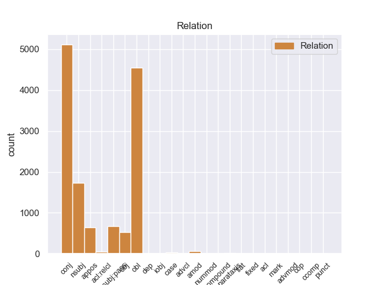
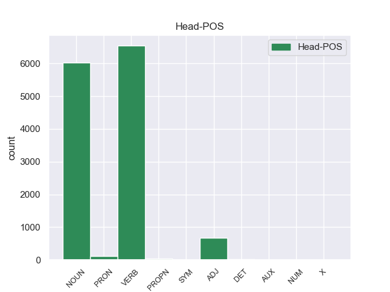
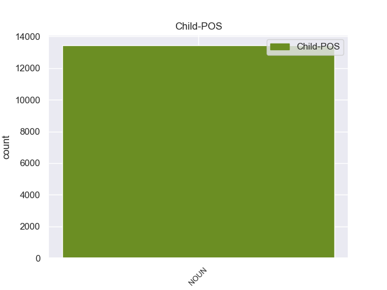

Distribution of features within this leaf



Agreement Rules sorted by frequency.
- When the dependent token is the conjunct(conj) of the head token, and the head token is NOUN and the dependent token is NOUN.
1 Esta _ _ _ _ 0 _ _ _
2 teoría _ _ _ _ 0 _ _ _
3 se _ _ _ _ 0 _ _ _
4 avenía _ _ _ _ 0 _ _ _
5 bien _ _ _ _ 0 _ _ _
6 con _ _ _ _ 0 _ _ _
7 la _ _ _ _ 0 _ _ _
8 creencia _ _ _ _ 0 _ _ _
9 de _ _ _ _ 0 _ _ _
10 el _ _ _ _ 0 _ _ _
11 Romanticismo _ _ _ _ 0 _ _ _
12 en _ _ _ _ 0 _ _ _
13 un _ _ _ _ 0 _ _ _
14 volkgeist _ _ _ _ 0 _ _ _
15 , _ _ _ _ 0 _ _ _
16 " _ _ _ _ 0 _ _ _
17 genio _ _ _ _ 0 _ _ _
18 o _ _ _ _ 0 _ _ _
19 espíritu _ _ _ _ 0 _ _ _
20 de _ _ _ _ 0 _ _ _
21 el _ _ _ _ 0 _ _ _
22 pueblo _ _ _ _ 0 _ _ _
23 " _ _ _ _ 0 _ _ _
24 , _ _ _ _ 0 _ _ _
25 autor autor NOUN _ Gender=Masc|Number=Sing 0 _ _ _
26 colectivo _ _ _ _ 0 _ _ _
27 y _ _ _ _ 0 _ _ _
28 anónimo anónimo NOUN _ Gender=Masc|Number=Sing 25 conj _ _
29 de _ _ _ _ 0 _ _ _
30 una _ _ _ _ 0 _ _ _
31 poesía _ _ _ _ 0 _ _ _
32 nacional _ _ _ _ 0 _ _ _
33 . _ _ _ _ 0 _ _ _
1 En _ _ _ _ 0 _ _ _
2 1991 _ _ _ _ 0 _ _ _
3 , _ _ _ _ 0 _ _ _
4 como _ _ _ _ 0 _ _ _
5 ya _ _ _ _ 0 _ _ _
6 está _ _ _ _ 0 _ _ _
7 indicado _ _ _ _ 0 _ _ _
8 en _ _ _ _ 0 _ _ _
9 el _ _ _ _ 0 _ _ _
10 párrafo _ _ _ _ 0 _ _ _
11 anterior _ _ _ _ 0 _ _ _
12 , _ _ _ _ 0 _ _ _
13 se _ _ _ _ 0 _ _ _
14 creó _ _ _ _ 0 _ _ _
15 un _ _ _ _ 0 _ _ _
16 equipo _ _ _ _ 0 _ _ _
17 ad _ _ _ _ 0 _ _ _
18 hoc _ _ _ _ 0 _ _ _
19 para _ _ _ _ 0 _ _ _
20 averiguar _ _ _ _ 0 _ _ _
21 como _ _ _ _ 0 _ _ _
22 se _ _ _ _ 0 _ _ _
23 podía _ _ _ _ 0 _ _ _
24 desarrollar _ _ _ _ 0 _ _ _
25 el _ _ _ _ 0 _ _ _
26 Dialogo _ _ _ _ 0 _ _ _
27 Social _ _ _ _ 0 _ _ _
28 , _ _ _ _ 0 _ _ _
29 este _ _ _ _ 0 _ _ _
30 equipo _ _ _ _ 0 _ _ _
31 estaba _ _ _ _ 0 _ _ _
32 formado formar VERB _ Gender=Masc|Number=Sing|VerbForm=Part 0 _ _ _
33 por _ _ _ _ 0 _ _ _
34 representantes representante NOUN _ Gender=Masc|Number=Plur 32 obl _ _
35 de _ _ _ _ 0 _ _ _
36 todas _ _ _ _ 0 _ _ _
37 las _ _ _ _ 0 _ _ _
38 organizaciones _ _ _ _ 0 _ _ _
39 relacionadas _ _ _ _ 0 _ _ _
40 con _ _ _ _ 0 _ _ _
41 CES _ _ _ _ 0 _ _ _
42 , _ _ _ _ 0 _ _ _
43 UNICE _ _ _ _ 0 _ _ _
44 y _ _ _ _ 0 _ _ _
45 CEEP _ _ _ _ 0 _ _ _
46 ; _ _ _ _ 0 _ _ _
1 En _ _ _ _ 0 _ _ _
2 1991 _ _ _ _ 0 _ _ _
3 , _ _ _ _ 0 _ _ _
4 como _ _ _ _ 0 _ _ _
5 ya _ _ _ _ 0 _ _ _
6 está _ _ _ _ 0 _ _ _
7 indicado _ _ _ _ 0 _ _ _
8 en _ _ _ _ 0 _ _ _
9 el _ _ _ _ 0 _ _ _
10 párrafo _ _ _ _ 0 _ _ _
11 anterior _ _ _ _ 0 _ _ _
12 , _ _ _ _ 0 _ _ _
13 se _ _ _ _ 0 _ _ _
14 creó _ _ _ _ 0 _ _ _
15 un _ _ _ _ 0 _ _ _
16 equipo _ _ _ _ 0 _ _ _
17 ad _ _ _ _ 0 _ _ _
18 hoc _ _ _ _ 0 _ _ _
19 para _ _ _ _ 0 _ _ _
20 averiguar _ _ _ _ 0 _ _ _
21 como _ _ _ _ 0 _ _ _
22 se _ _ _ _ 0 _ _ _
23 podía _ _ _ _ 0 _ _ _
24 desarrollar _ _ _ _ 0 _ _ _
25 el _ _ _ _ 0 _ _ _
26 Dialogo _ _ _ _ 0 _ _ _
27 Social _ _ _ _ 0 _ _ _
28 , _ _ _ _ 0 _ _ _
29 este _ _ _ _ 0 _ _ _
30 equipo equipo NOUN _ Gender=Masc|Number=Sing 32 nsubj:pass _ _
31 estaba _ _ _ _ 0 _ _ _
32 formado formar VERB _ Gender=Masc|Number=Sing|VerbForm=Part 0 _ _ _
33 por _ _ _ _ 0 _ _ _
34 representantes _ _ _ _ 0 _ _ _
35 de _ _ _ _ 0 _ _ _
36 todas _ _ _ _ 0 _ _ _
37 las _ _ _ _ 0 _ _ _
38 organizaciones _ _ _ _ 0 _ _ _
39 relacionadas _ _ _ _ 0 _ _ _
40 con _ _ _ _ 0 _ _ _
41 CES _ _ _ _ 0 _ _ _
42 , _ _ _ _ 0 _ _ _
43 UNICE _ _ _ _ 0 _ _ _
44 y _ _ _ _ 0 _ _ _
45 CEEP _ _ _ _ 0 _ _ _
46 ; _ _ _ _ 0 _ _ _
1 Igualmente _ _ _ _ 0 _ _ _
2 , _ _ _ _ 0 _ _ _
3 la _ _ _ _ 0 _ _ _
4 presencia presencia NOUN _ Gender=Fem|Number=Sing 8 nsubj _ _
5 de _ _ _ _ 0 _ _ _
6 Ledesma _ _ _ _ 0 _ _ _
7 está _ _ _ _ 0 _ _ _
8 supeditada supeditar VERB _ Gender=Fem|Number=Sing|VerbForm=Part 0 _ _ _
9 a _ _ _ _ 0 _ _ _
10 la _ _ _ _ 0 _ _ _
11 actuación _ _ _ _ 0 _ _ _
12 de _ _ _ _ 0 _ _ _
13 el _ _ _ _ 0 _ _ _
14 seleccionado _ _ _ _ 0 _ _ _
15 argentino _ _ _ _ 0 _ _ _
16 sub _ _ _ _ 0 _ _ _
17 20 _ _ _ _ 0 _ _ _
18 en _ _ _ _ 0 _ _ _
19 los _ _ _ _ 0 _ _ _
20 Panamericanos _ _ _ _ 0 _ _ _
21 , _ _ _ _ 0 _ _ _
22 ya _ _ _ _ 0 _ _ _
23 que _ _ _ _ 0 _ _ _
24 Cirigliano _ _ _ _ 0 _ _ _
25 sólo _ _ _ _ 0 _ _ _
26 estaría _ _ _ _ 0 _ _ _
27 en _ _ _ _ 0 _ _ _
28 condiciones _ _ _ _ 0 _ _ _
29 de _ _ _ _ 0 _ _ _
30 jugar _ _ _ _ 0 _ _ _
31 ante _ _ _ _ 0 _ _ _
32 Aldosivi _ _ _ _ 0 _ _ _
33 en _ _ _ _ 0 _ _ _
34 caso _ _ _ _ 0 _ _ _
35 de _ _ _ _ 0 _ _ _
36 que _ _ _ _ 0 _ _ _
37 el _ _ _ _ 0 _ _ _
38 elenco _ _ _ _ 0 _ _ _
39 " _ _ _ _ 0 _ _ _
40 albiceleste _ _ _ _ 0 _ _ _
41 " _ _ _ _ 0 _ _ _
42 no _ _ _ _ 0 _ _ _
43 supere _ _ _ _ 0 _ _ _
44 la _ _ _ _ 0 _ _ _
45 primera _ _ _ _ 0 _ _ _
46 ronda _ _ _ _ 0 _ _ _
47 , _ _ _ _ 0 _ _ _
48 algo _ _ _ _ 0 _ _ _
49 poco _ _ _ _ 0 _ _ _
50 probable _ _ _ _ 0 _ _ _
51 . _ _ _ _ 0 _ _ _
1 Ahora _ _ _ _ 0 _ _ _
2 se _ _ _ _ 0 _ _ _
3 aunan _ _ _ _ 0 _ _ _
4 cocina _ _ _ _ 0 _ _ _
5 y _ _ _ _ 0 _ _ _
6 entorno _ _ _ _ 0 _ _ _
7 , _ _ _ _ 0 _ _ _
8 me _ _ _ _ 0 _ _ _
9 encanto _ _ _ _ 0 _ _ _
10 la _ _ _ _ 0 _ _ _
11 bodega _ _ _ _ 0 _ _ _
12 , _ _ _ _ 0 _ _ _
13 las _ _ _ _ 0 _ _ _
14 sillas _ _ _ _ 0 _ _ _
15 son _ _ _ _ 0 _ _ _
16 comodisimas _ _ _ _ 0 _ _ _
17 , _ _ _ _ 0 _ _ _
18 la _ _ _ _ 0 _ _ _
19 iluminacion iluminacion NOUN _ Gender=Fem|Number=Sing 21 nsubj _ _
20 es _ _ _ _ 0 _ _ _
21 excepcional excepcionao ADJ _ Gender=Fem|Number=Sing 0 _ _ _
22 , _ _ _ _ 0 _ _ _
23 alcanzas _ _ _ _ 0 _ _ _
24 un _ _ _ _ 0 _ _ _
25 grado _ _ _ _ 0 _ _ _
26 de _ _ _ _ 0 _ _ _
27 satisfaccion _ _ _ _ 0 _ _ _
28 que _ _ _ _ 0 _ _ _
29 no _ _ _ _ 0 _ _ _
30 se _ _ _ _ 0 _ _ _
31 puede _ _ _ _ 0 _ _ _
32 describir _ _ _ _ 0 _ _ _
33 , _ _ _ _ 0 _ _ _
34 hay _ _ _ _ 0 _ _ _
35 que _ _ _ _ 0 _ _ _
36 probar _ _ _ _ 0 _ _ _
37 lo _ _ _ _ 0 _ _ _
38 , _ _ _ _ 0 _ _ _
39 es _ _ _ _ 0 _ _ _
40 la _ _ _ _ 0 _ _ _
41 primera _ _ _ _ 0 _ _ _
42 vez _ _ _ _ 0 _ _ _
43 en _ _ _ _ 0 _ _ _
44 mi _ _ _ _ 0 _ _ _
45 vda _ _ _ _ 0 _ _ _
46 que _ _ _ _ 0 _ _ _
47 una _ _ _ _ 0 _ _ _
48 cocina _ _ _ _ 0 _ _ _
49 me _ _ _ _ 0 _ _ _
50 emociona _ _ _ _ 0 _ _ _
51 hasta _ _ _ _ 0 _ _ _
52 ese _ _ _ _ 0 _ _ _
53 punto _ _ _ _ 0 _ _ _
54 . _ _ _ _ 0 _ _ _
1 Esta _ _ _ _ 0 _ _ _
2 teoría _ _ _ _ 0 _ _ _
3 se _ _ _ _ 0 _ _ _
4 avenía _ _ _ _ 0 _ _ _
5 bien _ _ _ _ 0 _ _ _
6 con _ _ _ _ 0 _ _ _
7 la _ _ _ _ 0 _ _ _
8 creencia _ _ _ _ 0 _ _ _
9 de _ _ _ _ 0 _ _ _
10 el _ _ _ _ 0 _ _ _
11 Romanticismo _ _ _ _ 0 _ _ _
12 en _ _ _ _ 0 _ _ _
13 un _ _ _ _ 0 _ _ _
14 volkgeist volkgeist NOUN _ Gender=Masc|Number=Sing 0 _ _ _
15 , _ _ _ _ 0 _ _ _
16 " _ _ _ _ 0 _ _ _
17 genio _ _ _ _ 0 _ _ _
18 o _ _ _ _ 0 _ _ _
19 espíritu _ _ _ _ 0 _ _ _
20 de _ _ _ _ 0 _ _ _
21 el _ _ _ _ 0 _ _ _
22 pueblo _ _ _ _ 0 _ _ _
23 " _ _ _ _ 0 _ _ _
24 , _ _ _ _ 0 _ _ _
25 autor autor NOUN _ Gender=Masc|Number=Sing 14 appos _ _
26 colectivo _ _ _ _ 0 _ _ _
27 y _ _ _ _ 0 _ _ _
28 anónimo _ _ _ _ 0 _ _ _
29 de _ _ _ _ 0 _ _ _
30 una _ _ _ _ 0 _ _ _
31 poesía _ _ _ _ 0 _ _ _
32 nacional _ _ _ _ 0 _ _ _
33 . _ _ _ _ 0 _ _ _
1 Mientras _ _ _ _ 0 _ _ _
2 tanto _ _ _ _ 0 _ _ _
3 , _ _ _ _ 0 _ _ _
4 los _ _ _ _ 0 _ _ _
5 Los _ _ _ _ 0 _ _ _
6 Angeles _ _ _ _ 0 _ _ _
7 Lakers _ _ _ _ 0 _ _ _
8 , _ _ _ _ 0 _ _ _
9 que _ _ _ _ 0 _ _ _
10 habían _ _ _ _ 0 _ _ _
11 elegido _ _ _ _ 0 _ _ _
12 a _ _ _ _ 0 _ _ _
13 el _ _ _ _ 0 _ _ _
14 jugador _ _ _ _ 0 _ _ _
15 en _ _ _ _ 0 _ _ _
16 en _ _ _ _ 0 _ _ _
17 la _ _ _ _ 0 _ _ _
18 trigésimo _ _ _ _ 0 _ _ _
19 primera _ _ _ _ 0 _ _ _
20 posición _ _ _ _ 0 _ _ _
21 de _ _ _ _ 0 _ _ _
22 el _ _ _ _ 0 _ _ _
23 Draft _ _ _ _ 0 _ _ _
24 de _ _ _ _ 0 _ _ _
25 la _ _ _ _ 0 _ _ _
26 NBA _ _ _ _ 0 _ _ _
27 de _ _ _ _ 0 _ _ _
28 1973 _ _ _ _ 0 _ _ _
29 , _ _ _ _ 0 _ _ _
30 habían _ _ _ _ 0 _ _ _
31 traspasado traspasar VERB _ Gender=Masc|Number=Sing|Tense=Past|VerbForm=Part 0 _ _ _
32 sus _ _ _ _ 0 _ _ _
33 derechos derecho NOUN _ Gender=Masc|Number=Plur 31 obj _ _
34 a _ _ _ _ 0 _ _ _
35 Cleveland _ _ _ _ 0 _ _ _
36 Cavaliers _ _ _ _ 0 _ _ _
37 a _ _ _ _ 0 _ _ _
38 cambio _ _ _ _ 0 _ _ _
39 de _ _ _ _ 0 _ _ _
40 una _ _ _ _ 0 _ _ _
41 futura _ _ _ _ 0 _ _ _
42 primera _ _ _ _ 0 _ _ _
43 ronda _ _ _ _ 0 _ _ _
44 de _ _ _ _ 0 _ _ _
45 el _ _ _ _ 0 _ _ _
46 draft _ _ _ _ 0 _ _ _
47 . _ _ _ _ 0 _ _ _
1 Un _ _ _ _ 0 _ _ _
2 circuito circuito NOUN _ Gender=Masc|Number=Sing 6 nsubj _ _
3 equivalente _ _ _ _ 0 _ _ _
4 es _ _ _ _ 0 _ _ _
5 un _ _ _ _ 0 _ _ _
6 circuito circuito NOUN _ Gender=Masc|Number=Sing 0 _ _ _
7 que _ _ _ _ 0 _ _ _
8 conserva _ _ _ _ 0 _ _ _
9 todas _ _ _ _ 0 _ _ _
10 las _ _ _ _ 0 _ _ _
11 características _ _ _ _ 0 _ _ _
12 eléctricas _ _ _ _ 0 _ _ _
13 de _ _ _ _ 0 _ _ _
14 un _ _ _ _ 0 _ _ _
15 circuito _ _ _ _ 0 _ _ _
16 dado _ _ _ _ 0 _ _ _
17 . _ _ _ _ 0 _ _ _
1 Del _ _ _ _ 0 _ _ _
2 total _ _ _ _ 0 _ _ _
3 de _ _ _ _ 0 _ _ _
4 la _ _ _ _ 0 _ _ _
5 población _ _ _ _ 0 _ _ _
6 el _ _ _ _ 0 _ _ _
7 7.18 _ _ _ _ 0 _ _ _
8 % _ _ _ _ 0 _ _ _
9 eran _ _ _ _ 0 _ _ _
10 hispanos hispano ADJ _ Gender=Masc|Number=Plur 0 _ _ _
11 o _ _ _ _ 0 _ _ _
12 latinos latino NOUN _ Gender=Masc|Number=Plur 10 conj _ _
13 de _ _ _ _ 0 _ _ _
14 cualquier _ _ _ _ 0 _ _ _
15 raza _ _ _ _ 0 _ _ _
16 . _ _ _ _ 0 _ _ _
1 De _ _ _ _ 0 _ _ _
2 los _ _ _ _ 0 _ _ _
3 714 _ _ _ _ 0 _ _ _
4 habitantes _ _ _ _ 0 _ _ _
5 , _ _ _ _ 0 _ _ _
6 el _ _ _ _ 0 _ _ _
7 municipio _ _ _ _ 0 _ _ _
8 de _ _ _ _ 0 _ _ _
9 Daggett _ _ _ _ 0 _ _ _
10 estaba _ _ _ _ 0 _ _ _
11 compuesto compuesr VERB _ Gender=Masc|Number=Sing|VerbForm=Part 0 _ _ _
12 por _ _ _ _ 0 _ _ _
13 el _ _ _ _ 0 _ _ _
14 93.28 _ _ _ _ 0 _ _ _
15 % _ _ _ _ 0 _ _ _
16 blancos _ _ _ _ 0 _ _ _
17 , _ _ _ _ 0 _ _ _
18 el _ _ _ _ 0 _ _ _
19 2.38 _ _ _ _ 0 _ _ _
20 % _ _ _ _ 0 _ _ _
21 eran _ _ _ _ 0 _ _ _
22 afroamericanos _ _ _ _ 0 _ _ _
23 , _ _ _ _ 0 _ _ _
24 el _ _ _ _ 0 _ _ _
25 0.84 _ _ _ _ 0 _ _ _
26 % _ _ _ _ 0 _ _ _
27 eran _ _ _ _ 0 _ _ _
28 amerindios _ _ _ _ 0 _ _ _
29 , _ _ _ _ 0 _ _ _
30 el _ _ _ _ 0 _ _ _
31 0.56 _ _ _ _ 0 _ _ _
32 % _ _ _ _ 0 _ _ _
33 eran _ _ _ _ 0 _ _ _
34 asiáticos _ _ _ _ 0 _ _ _
35 , _ _ _ _ 0 _ _ _
36 el _ _ _ _ 0 _ _ _
37 0 _ _ _ _ 0 _ _ _
38 % _ _ _ _ 0 _ _ _
39 eran _ _ _ _ 0 _ _ _
40 isleños isleño NOUN _ Gender=Masc|Number=Plur 11 conj _ _
41 de _ _ _ _ 0 _ _ _
42 el _ _ _ _ 0 _ _ _
43 Pacífico _ _ _ _ 0 _ _ _
44 , _ _ _ _ 0 _ _ _
45 el _ _ _ _ 0 _ _ _
46 0.84 _ _ _ _ 0 _ _ _
47 % _ _ _ _ 0 _ _ _
48 eran _ _ _ _ 0 _ _ _
49 de _ _ _ _ 0 _ _ _
50 otras _ _ _ _ 0 _ _ _
51 razas _ _ _ _ 0 _ _ _
52 y _ _ _ _ 0 _ _ _
53 el _ _ _ _ 0 _ _ _
54 2.1 _ _ _ _ 0 _ _ _
55 % _ _ _ _ 0 _ _ _
56 pertenecían _ _ _ _ 0 _ _ _
57 a _ _ _ _ 0 _ _ _
58 dos _ _ _ _ 0 _ _ _
59 o _ _ _ _ 0 _ _ _
60 más _ _ _ _ 0 _ _ _
61 razas _ _ _ _ 0 _ _ _
62 . _ _ _ _ 0 _ _ _
1 Una _ _ _ _ 0 _ _ _
2 posibilidad posibilidad NOUN _ Gender=Fem|Number=Sing 24 nsubj _ _
3 que _ _ _ _ 0 _ _ _
4 tiene _ _ _ _ 0 _ _ _
5 esta _ _ _ _ 0 _ _ _
6 habitación _ _ _ _ 0 _ _ _
7 gracias _ _ _ _ 0 _ _ _
8 a _ _ _ _ 0 _ _ _
9 que _ _ _ _ 0 _ _ _
10 es _ _ _ _ 0 _ _ _
11 menos _ _ _ _ 0 _ _ _
12 ruidosa _ _ _ _ 0 _ _ _
13 por _ _ _ _ 0 _ _ _
14 encontrar _ _ _ _ 0 _ _ _
15 se _ _ _ _ 0 _ _ _
16 alejada _ _ _ _ 0 _ _ _
17 de _ _ _ _ 0 _ _ _
18 el _ _ _ _ 0 _ _ _
19 resto _ _ _ _ 0 _ _ _
20 de _ _ _ _ 0 _ _ _
21 cuartos _ _ _ _ 0 _ _ _
22 , _ _ _ _ 0 _ _ _
23 es _ _ _ _ 0 _ _ _
24 la él PRON _ Case=Acc|Gender=Fem|Number=Sing|Person=3|PrepCase=Npr|PronType=Prs 0 _ _ _
25 de _ _ _ _ 0 _ _ _
26 convertir _ _ _ _ 0 _ _ _
27 la _ _ _ _ 0 _ _ _
28 en _ _ _ _ 0 _ _ _
29 un _ _ _ _ 0 _ _ _
30 estudio _ _ _ _ 0 _ _ _
31 . _ _ _ _ 0 _ _ _
1 Abrazo _ _ _ _ 0 _ _ _
2 era _ _ _ _ 0 _ _ _
3 voz _ _ _ _ 0 _ _ _
4 muy _ _ _ _ 0 _ _ _
5 usada usado ADJ _ Gender=Fem|Number=Sing 0 _ _ _
6 en _ _ _ _ 0 _ _ _
7 las _ _ _ _ 0 _ _ _
8 ceremonias ceremonia NOUN _ Gender=Fem|Number=Plur 5 obl _ _
9 de _ _ _ _ 0 _ _ _
10 caballería _ _ _ _ 0 _ _ _
11 , _ _ _ _ 0 _ _ _
12 en _ _ _ _ 0 _ _ _
13 que _ _ _ _ 0 _ _ _
14 el _ _ _ _ 0 _ _ _
15 recién _ _ _ _ 0 _ _ _
16 armado _ _ _ _ 0 _ _ _
17 recibía _ _ _ _ 0 _ _ _
18 : _ _ _ _ 0 _ _ _
19 l' _ _ _ _ 0 _ _ _
20 accolade _ _ _ _ 0 _ _ _
21 , _ _ _ _ 0 _ _ _
22 en _ _ _ _ 0 _ _ _
23 francés _ _ _ _ 0 _ _ _
24 . _ _ _ _ 0 _ _ _
1 En _ _ _ _ 0 _ _ _
2 1984 _ _ _ _ 0 _ _ _
3 , _ _ _ _ 0 _ _ _
4 la _ _ _ _ 0 _ _ _
5 nominación _ _ _ _ 0 _ _ _
6 de _ _ _ _ 0 _ _ _
7 el _ _ _ _ 0 _ _ _
8 eminente eminente NOUN _ Gender=Masc|Number=Sing 9 amod _ _
9 polemista polemista NOUN _ Gender=Masc|Number=Sing 0 _ _ _
10 Hugo _ _ _ _ 0 _ _ _
11 Brandt _ _ _ _ 0 _ _ _
12 Corstius _ _ _ _ 0 _ _ _
13 por _ _ _ _ 0 _ _ _
14 el _ _ _ _ 0 _ _ _
15 jurado _ _ _ _ 0 _ _ _
16 provocó _ _ _ _ 0 _ _ _
17 tensiones _ _ _ _ 0 _ _ _
18 entre _ _ _ _ 0 _ _ _
19 la _ _ _ _ 0 _ _ _
20 fundación _ _ _ _ 0 _ _ _
21 independiente _ _ _ _ 0 _ _ _
22 y _ _ _ _ 0 _ _ _
23 el _ _ _ _ 0 _ _ _
24 Estado _ _ _ _ 0 _ _ _
25 . _ _ _ _ 0 _ _ _
1 Cuenta _ _ _ _ 0 _ _ _
2 las _ _ _ _ 0 _ _ _
3 azarosas _ _ _ _ 0 _ _ _
4 e _ _ _ _ 0 _ _ _
5 intrépidas _ _ _ _ 0 _ _ _
6 aventuras _ _ _ _ 0 _ _ _
7 de _ _ _ _ 0 _ _ _
8 un _ _ _ _ 0 _ _ _
9 pequeño _ _ _ _ 0 _ _ _
10 mago mago NOUN _ Gender=Masc|Number=Sing 0 _ _ _
11 llamado _ _ _ _ 0 _ _ _
12 Bieto _ _ _ _ 0 _ _ _
13 Dubidoso _ _ _ _ 0 _ _ _
14 que _ _ _ _ 0 _ _ _
15 se _ _ _ _ 0 _ _ _
16 declara _ _ _ _ 0 _ _ _
17 prestidigitador prestidigitador NOUN _ Gender=Masc|Number=Sing 10 acl:relcl _ _
18 y _ _ _ _ 0 _ _ _
19 no _ _ _ _ 0 _ _ _
20 hechicero _ _ _ _ 0 _ _ _
21 ; _ _ _ _ 0 _ _ _
1 Aragón aragón PROPN _ Gender=Masc|Number=Sing 0 _ _ _
2 y _ _ _ _ 0 _ _ _
3 contraterciado contraterciado NOUN _ Gender=Masc|Number=Sing 1 conj _ _
4 de _ _ _ _ 0 _ _ _
5 Hungría _ _ _ _ 0 _ _ _
6 , _ _ _ _ 0 _ _ _
7 Anjou _ _ _ _ 0 _ _ _
8 - _ _ _ _ 0 _ _ _
9 Nápoles _ _ _ _ 0 _ _ _
10 y _ _ _ _ 0 _ _ _
11 Jerusalén _ _ _ _ 0 _ _ _
12 . _ _ _ _ 0 _ _ _
1 Recientemente _ _ _ _ 0 _ _ _
2 la _ _ _ _ 0 _ _ _
3 Agencia _ _ _ _ 0 _ _ _
4 Espacial _ _ _ _ 0 _ _ _
5 Europea _ _ _ _ 0 _ _ _
6 ha _ _ _ _ 0 _ _ _
7 tratado _ _ _ _ 0 _ _ _
8 de _ _ _ _ 0 _ _ _
9 encontrar _ _ _ _ 0 _ _ _
10 nuevas _ _ _ _ 0 _ _ _
11 opciones _ _ _ _ 0 _ _ _
12 , _ _ _ _ 0 _ _ _
13 en _ _ _ _ 0 _ _ _
14 términos _ _ _ _ 0 _ _ _
15 de _ _ _ _ 0 _ _ _
16 combinaciones _ _ _ _ 0 _ _ _
17 propelente _ _ _ _ 0 _ _ _
18 / _ _ _ _ 0 _ _ _
19 oxidante _ _ _ _ 0 _ _ _
20 , _ _ _ _ 0 _ _ _
21 para _ _ _ _ 0 _ _ _
22 evitar _ _ _ _ 0 _ _ _
23 que _ _ _ _ 0 _ _ _
24 se _ _ _ _ 0 _ _ _
25 usen _ _ _ _ 0 _ _ _
26 químicos _ _ _ _ 0 _ _ _
27 venenosos _ _ _ _ 0 _ _ _
28 como _ _ _ _ 0 _ _ _
29 este este PRON _ Gender=Masc|Number=Sing|PronType=Dem 0 _ _ _
30 y _ _ _ _ 0 _ _ _
31 sus _ _ _ _ 0 _ _ _
32 derivados derivado NOUN _ Gender=Masc|Number=Plur 29 conj _ _
33 . _ _ _ _ 0 _ _ _
1 El _ _ _ _ 0 _ _ _
2 carácter _ _ _ _ 0 _ _ _
3 social _ _ _ _ 0 _ _ _
4 de _ _ _ _ 0 _ _ _
5 la _ _ _ _ 0 _ _ _
6 Fundación _ _ _ _ 0 _ _ _
7 y _ _ _ _ 0 _ _ _
8 su _ _ _ _ 0 _ _ _
9 faceta _ _ _ _ 0 _ _ _
10 de _ _ _ _ 0 _ _ _
11 entidad _ _ _ _ 0 _ _ _
12 generadora _ _ _ _ 0 _ _ _
13 de _ _ _ _ 0 _ _ _
14 riqueza _ _ _ _ 0 _ _ _
15 y _ _ _ _ 0 _ _ _
16 de _ _ _ _ 0 _ _ _
17 empleo _ _ _ _ 0 _ _ _
18 se _ _ _ _ 0 _ _ _
19 ponen _ _ _ _ 0 _ _ _
20 de _ _ _ _ 0 _ _ _
21 manifiesto _ _ _ _ 0 _ _ _
22 en _ _ _ _ 0 _ _ _
23 la _ _ _ _ 0 _ _ _
24 creación _ _ _ _ 0 _ _ _
25 de _ _ _ _ 0 _ _ _
26 110 _ _ _ _ 0 _ _ _
27 puestos _ _ _ _ 0 _ _ _
28 de _ _ _ _ 0 _ _ _
29 trabajo _ _ _ _ 0 _ _ _
30 a _ _ _ _ 0 _ _ _
31 jornada jornada NOUN _ Gender=Fem|Number=Sing 0 _ _ _
32 completa _ _ _ _ 0 _ _ _
33 durante _ _ _ _ 0 _ _ _
34 2010 _ _ _ _ 0 _ _ _
35 gracias gracia NOUN _ Gender=Fem|Number=Plur 31 case _ _
36 a _ _ _ _ 0 _ _ _
37 su _ _ _ _ 0 _ _ _
38 actividad _ _ _ _ 0 _ _ _
39 . _ _ _ _ 0 _ _ _
1 Ese _ _ _ _ 0 _ _ _
2 modo modo NOUN _ Gender=Masc|Number=Sing 7 nsubj _ _
3 de _ _ _ _ 0 _ _ _
4 hacer _ _ _ _ 0 _ _ _
5 filosofía _ _ _ _ 0 _ _ _
6 es _ _ _ _ 0 _ _ _
7 el el DET _ Definite=Def|Gender=Masc|Number=Sing|PronType=Art 0 _ _ _
8 que _ _ _ _ 0 _ _ _
9 para _ _ _ _ 0 _ _ _
10 Rorty _ _ _ _ 0 _ _ _
11 termina _ _ _ _ 0 _ _ _
12 divorciándo _ _ _ _ 0 _ _ _
13 se _ _ _ _ 0 _ _ _
14 de _ _ _ _ 0 _ _ _
15 la _ _ _ _ 0 _ _ _
16 realidad _ _ _ _ 0 _ _ _
17 y _ _ _ _ 0 _ _ _
18 es _ _ _ _ 0 _ _ _
19 el _ _ _ _ 0 _ _ _
20 que _ _ _ _ 0 _ _ _
21 , _ _ _ _ 0 _ _ _
22 finalmente _ _ _ _ 0 _ _ _
23 , _ _ _ _ 0 _ _ _
24 genera _ _ _ _ 0 _ _ _
25 una _ _ _ _ 0 _ _ _
26 filosofía _ _ _ _ 0 _ _ _
27 que _ _ _ _ 0 _ _ _
28 sólo _ _ _ _ 0 _ _ _
29 habla _ _ _ _ 0 _ _ _
30 de _ _ _ _ 0 _ _ _
31 sí _ _ _ _ 0 _ _ _
32 misma _ _ _ _ 0 _ _ _
33 y _ _ _ _ 0 _ _ _
34 que _ _ _ _ 0 _ _ _
35 gira _ _ _ _ 0 _ _ _
36 sobre _ _ _ _ 0 _ _ _
37 sí _ _ _ _ 0 _ _ _
38 misma _ _ _ _ 0 _ _ _
39 en _ _ _ _ 0 _ _ _
40 una _ _ _ _ 0 _ _ _
41 especie _ _ _ _ 0 _ _ _
42 de _ _ _ _ 0 _ _ _
43 metalenguaje _ _ _ _ 0 _ _ _
44 . _ _ _ _ 0 _ _ _
1 Es _ _ _ _ 0 _ _ _
2 mencionado _ _ _ _ 0 _ _ _
3 por _ _ _ _ 0 _ _ _
4 primera _ _ _ _ 0 _ _ _
5 vez _ _ _ _ 0 _ _ _
6 en _ _ _ _ 0 _ _ _
7 el _ _ _ _ 0 _ _ _
8 cuento _ _ _ _ 0 _ _ _
9 The _ _ _ _ 0 _ _ _
10 hound hound PROPN _ Gender=Masc|Number=Sing 0 _ _ _
11 ( _ _ _ _ 0 _ _ _
12 El _ _ _ _ 0 _ _ _
13 sabueso sabueso NOUN _ Gender=Masc|Number=Sing 10 appos _ _
14 , _ _ _ _ 0 _ _ _
15 1922 _ _ _ _ 0 _ _ _
16 ) _ _ _ _ 0 _ _ _
17 . _ _ _ _ 0 _ _ _
1 Si _ _ _ _ 0 _ _ _
2 el _ _ _ _ 0 _ _ _
3 país _ _ _ _ 0 _ _ _
4 debe _ _ _ _ 0 _ _ _
5 solicitar _ _ _ _ 0 _ _ _
6 el _ _ _ _ 0 _ _ _
7 ingreso _ _ _ _ 0 _ _ _
8 en _ _ _ _ 0 _ _ _
9 la _ _ _ _ 0 _ _ _
10 Unión _ _ _ _ 0 _ _ _
11 Europea _ _ _ _ 0 _ _ _
12 ha _ _ _ _ 0 _ _ _
13 sido _ _ _ _ 0 _ _ _
14 uno uno PRON _ Gender=Masc|Number=Sing|PronType=Ind 0 _ _ _
15 de _ _ _ _ 0 _ _ _
16 los _ _ _ _ 0 _ _ _
17 temas _ _ _ _ 0 _ _ _
18 más _ _ _ _ 0 _ _ _
19 dominantes _ _ _ _ 0 _ _ _
20 y _ _ _ _ 0 _ _ _
21 divisivos _ _ _ _ 0 _ _ _
22 en _ _ _ _ 0 _ _ _
23 Noruega _ _ _ _ 0 _ _ _
24 debate debate NOUN _ Gender=Masc|Number=Sing 14 appos _ _
25 político _ _ _ _ 0 _ _ _
26 y _ _ _ _ 0 _ _ _
27 económico _ _ _ _ 0 _ _ _
28 desde _ _ _ _ 0 _ _ _
29 la _ _ _ _ 0 _ _ _
30 Segunda _ _ _ _ 0 _ _ _
31 Guerra _ _ _ _ 0 _ _ _
32 Mundial _ _ _ _ 0 _ _ _
33 . _ _ _ _ 0 _ _ _
1 Como _ _ _ _ 0 _ _ _
2 que _ _ _ _ 0 _ _ _
3 una _ _ _ _ 0 _ _ _
4 hija _ _ _ _ 0 _ _ _
5 de _ _ _ _ 0 _ _ _
6 Guillermo _ _ _ _ 0 _ _ _
7 , _ _ _ _ 0 _ _ _
8 llamada _ _ _ _ 0 _ _ _
9 Romila _ _ _ _ 0 _ _ _
10 ( _ _ _ _ 0 _ _ _
11 de _ _ _ _ 0 _ _ _
12 la _ _ _ _ 0 _ _ _
13 que _ _ _ _ 0 _ _ _
14 no _ _ _ _ 0 _ _ _
15 se _ _ _ _ 0 _ _ _
16 sabe _ _ _ _ 0 _ _ _
17 la _ _ _ _ 0 _ _ _
18 madre _ _ _ _ 0 _ _ _
19 ) _ _ _ _ 0 _ _ _
20 es _ _ _ _ 0 _ _ _
21 identificada identificar VERB _ Gender=Fem|Number=Sing|VerbForm=Part 0 _ _ _
22 con _ _ _ _ 0 _ _ _
23 la _ _ _ _ 0 _ _ _
24 que _ _ _ _ 0 _ _ _
25 fue _ _ _ _ 0 _ _ _
26 mujer mujer NOUN _ Gender=Fem|Number=Sing 21 parataxis _ _
27 y _ _ _ _ 0 _ _ _
28 por _ _ _ _ 0 _ _ _
29 tanto _ _ _ _ 0 _ _ _
30 hermanastra _ _ _ _ 0 _ _ _
31 de _ _ _ _ 0 _ _ _
32 Bera _ _ _ _ 0 _ _ _
33 , _ _ _ _ 0 _ _ _
34 caso _ _ _ _ 0 _ _ _
35 de _ _ _ _ 0 _ _ _
36 que _ _ _ _ 0 _ _ _
37 se _ _ _ _ 0 _ _ _
38 hubiese _ _ _ _ 0 _ _ _
39 producido _ _ _ _ 0 _ _ _
40 este _ _ _ _ 0 _ _ _
41 matrimonio _ _ _ _ 0 _ _ _
42 ( _ _ _ _ 0 _ _ _
43 que _ _ _ _ 0 _ _ _
44 no _ _ _ _ 0 _ _ _
45 era _ _ _ _ 0 _ _ _
46 excepcional _ _ _ _ 0 _ _ _
47 en _ _ _ _ 0 _ _ _
48 la _ _ _ _ 0 _ _ _
49 época _ _ _ _ 0 _ _ _
50 ) _ _ _ _ 0 _ _ _
51 Bera _ _ _ _ 0 _ _ _
52 probablemente _ _ _ _ 0 _ _ _
53 sería _ _ _ _ 0 _ _ _
54 hijo _ _ _ _ 0 _ _ _
55 de _ _ _ _ 0 _ _ _
56 la _ _ _ _ 0 _ _ _
57 primera _ _ _ _ 0 _ _ _
58 mujer _ _ _ _ 0 _ _ _
59 para _ _ _ _ 0 _ _ _
60 poder _ _ _ _ 0 _ _ _
61 casar _ _ _ _ 0 _ _ _
62 se _ _ _ _ 0 _ _ _
63 con _ _ _ _ 0 _ _ _
64 una _ _ _ _ 0 _ _ _
65 mujer _ _ _ _ 0 _ _ _
66 más _ _ _ _ 0 _ _ _
67 joven _ _ _ _ 0 _ _ _
68 que _ _ _ _ 0 _ _ _
69 él _ _ _ _ 0 _ _ _
70 ; _ _ _ _ 0 _ _ _
1 Iglesia iglesia NOUN _ Gender=Fem|Number=Sing 0 _ _ _
2 de _ _ _ _ 0 _ _ _
3 la _ _ _ _ 0 _ _ _
4 Natividad _ _ _ _ 0 _ _ _
5 de _ _ _ _ 0 _ _ _
6 Nuestra _ _ _ _ 0 _ _ _
7 Señora _ _ _ _ 0 _ _ _
8 , _ _ _ _ 0 _ _ _
9 dependiente dependiente NOUN _ Gender=Fem|Number=Sing 1 acl _ _
10 de _ _ _ _ 0 _ _ _
11 la _ _ _ _ 0 _ _ _
12 parroquia _ _ _ _ 0 _ _ _
13 de _ _ _ _ 0 _ _ _
14 Quintanapalla _ _ _ _ 0 _ _ _
15 en _ _ _ _ 0 _ _ _
16 el _ _ _ _ 0 _ _ _
17 Arcipestrazgo _ _ _ _ 0 _ _ _
18 de _ _ _ _ 0 _ _ _
19 San _ _ _ _ 0 _ _ _
20 Juan _ _ _ _ 0 _ _ _
21 de _ _ _ _ 0 _ _ _
22 Ortega _ _ _ _ 0 _ _ _
23 , _ _ _ _ 0 _ _ _
24 diócesis _ _ _ _ 0 _ _ _
25 de _ _ _ _ 0 _ _ _
26 Burgos _ _ _ _ 0 _ _ _
27 . _ _ _ _ 0 _ _ _
1 En _ _ _ _ 0 _ _ _
2 la _ _ _ _ 0 _ _ _
3 segunda _ _ _ _ 0 _ _ _
4 temporada _ _ _ _ 0 _ _ _
5 adquiere _ _ _ _ 0 _ _ _
6 una _ _ _ _ 0 _ _ _
7 forma _ _ _ _ 0 _ _ _
8 transmetal _ _ _ _ 0 _ _ _
9 y _ _ _ _ 0 _ _ _
10 en _ _ _ _ 0 _ _ _
11 la _ _ _ _ 0 _ _ _
12 tercera tercero NOUN _ Gender=Fem|Number=Sing|NumType=Ord 14 nummod _ _
13 una _ _ _ _ 0 _ _ _
14 forma forma NOUN _ Gender=Fem|Number=Sing 0 _ _ _
15 transmetal _ _ _ _ 0 _ _ _
16 2 _ _ _ _ 0 _ _ _
17 de _ _ _ _ 0 _ _ _
18 Dragón _ _ _ _ 0 _ _ _
19 Rojo _ _ _ _ 0 _ _ _
20 . _ _ _ _ 0 _ _ _
1 Diversos _ _ _ _ 0 _ _ _
2 autores _ _ _ _ 0 _ _ _
3 , _ _ _ _ 0 _ _ _
4 como _ _ _ _ 0 _ _ _
5 Carl _ _ _ _ 0 _ _ _
6 Ruck _ _ _ _ 0 _ _ _
7 , _ _ _ _ 0 _ _ _
8 J.D.P. _ _ _ _ 0 _ _ _
9 Bolton _ _ _ _ 0 _ _ _
10 e _ _ _ _ 0 _ _ _
11 Ildikó _ _ _ _ 0 _ _ _
12 Lehtinen _ _ _ _ 0 _ _ _
13 han _ _ _ _ 0 _ _ _
14 especulado especur VERB _ Gender=Masc|Number=Sing|Tense=Past|VerbForm=Part 0 _ _ _
15 que _ _ _ _ 0 _ _ _
16 se _ _ _ _ 0 _ _ _
17 tratase _ _ _ _ 0 _ _ _
18 de _ _ _ _ 0 _ _ _
19 la _ _ _ _ 0 _ _ _
20 actual _ _ _ _ 0 _ _ _
21 Zungaria _ _ _ _ 0 _ _ _
22 , _ _ _ _ 0 _ _ _
23 que _ _ _ _ 0 _ _ _
24 el _ _ _ _ 0 _ _ _
25 origen _ _ _ _ 0 _ _ _
26 de _ _ _ _ 0 _ _ _
27 los _ _ _ _ 0 _ _ _
28 grifos _ _ _ _ 0 _ _ _
29 mitológicos _ _ _ _ 0 _ _ _
30 fuese _ _ _ _ 0 _ _ _
31 el _ _ _ _ 0 _ _ _
32 descubrimiento descubrimiento NOUN _ Gender=Masc|Number=Sing 14 advcl _ _
33 de _ _ _ _ 0 _ _ _
34 fósiles _ _ _ _ 0 _ _ _
35 de _ _ _ _ 0 _ _ _
36 protoceratops _ _ _ _ 0 _ _ _
37 , _ _ _ _ 0 _ _ _
38 abundantes _ _ _ _ 0 _ _ _
39 en _ _ _ _ 0 _ _ _
40 la _ _ _ _ 0 _ _ _
41 región _ _ _ _ 0 _ _ _
42 y _ _ _ _ 0 _ _ _
43 que _ _ _ _ 0 _ _ _
44 la _ _ _ _ 0 _ _ _
45 mítica _ _ _ _ 0 _ _ _
46 hiperborea _ _ _ _ 0 _ _ _
47 con _ _ _ _ 0 _ _ _
48 sus _ _ _ _ 0 _ _ _
49 pacíficos _ _ _ _ 0 _ _ _
50 y _ _ _ _ 0 _ _ _
51 civilizados _ _ _ _ 0 _ _ _
52 habitantes _ _ _ _ 0 _ _ _
53 , _ _ _ _ 0 _ _ _
54 habría _ _ _ _ 0 _ _ _
55 sido _ _ _ _ 0 _ _ _
56 la _ _ _ _ 0 _ _ _
57 antigua _ _ _ _ 0 _ _ _
58 civilización _ _ _ _ 0 _ _ _
59 china _ _ _ _ 0 _ _ _
60 . _ _ _ _ 0 _ _ _
1 La _ _ _ _ 0 _ _ _
2 madre _ _ _ _ 0 _ _ _
3 se _ _ _ _ 0 _ _ _
4 casó _ _ _ _ 0 _ _ _
5 con _ _ _ _ 0 _ _ _
6 William _ _ _ _ 0 _ _ _
7 Molard _ _ _ _ 0 _ _ _
8 , _ _ _ _ 0 _ _ _
9 músico _ _ _ _ 0 _ _ _
10 medio _ _ _ _ 0 _ _ _
11 francés _ _ _ _ 0 _ _ _
12 y _ _ _ _ 0 _ _ _
13 medio medio NOUN _ Gender=Masc|Number=Sing 14 amod _ _
14 noruego noruego ADJ _ Gender=Masc|Number=Sing 0 _ _ _
15 , _ _ _ _ 0 _ _ _
16 y _ _ _ _ 0 _ _ _
17 se _ _ _ _ 0 _ _ _
18 instalaron _ _ _ _ 0 _ _ _
19 en _ _ _ _ 0 _ _ _
20 París _ _ _ _ 0 _ _ _
21 . _ _ _ _ 0 _ _ _
1 El _ _ _ _ 0 _ _ _
2 estadio estadio NOUN _ Gender=Masc|Number=Sing 10 nsubj _ _
3 de _ _ _ _ 0 _ _ _
4 el _ _ _ _ 0 _ _ _
5 Atlético _ _ _ _ 0 _ _ _
6 Mambas _ _ _ _ 0 _ _ _
7 Negras _ _ _ _ 0 _ _ _
8 es _ _ _ _ 0 _ _ _
9 el _ _ _ _ 0 _ _ _
10 Estadio estadio PROPN _ Gender=Masc|Number=Sing 0 _ _ _
11 Municipal _ _ _ _ 0 _ _ _
12 de _ _ _ _ 0 _ _ _
13 Rosario _ _ _ _ 0 _ _ _
14 Jorge _ _ _ _ 0 _ _ _
15 Newbery _ _ _ _ 0 _ _ _
16 , _ _ _ _ 0 _ _ _
17 se _ _ _ _ 0 _ _ _
18 encuentra _ _ _ _ 0 _ _ _
19 emplazado _ _ _ _ 0 _ _ _
20 en _ _ _ _ 0 _ _ _
21 el _ _ _ _ 0 _ _ _
22 predio _ _ _ _ 0 _ _ _
23 de _ _ _ _ 0 _ _ _
24 el _ _ _ _ 0 _ _ _
25 Parque _ _ _ _ 0 _ _ _
26 Independencia _ _ _ _ 0 _ _ _
27 de _ _ _ _ 0 _ _ _
28 Rosario _ _ _ _ 0 _ _ _
29 , _ _ _ _ 0 _ _ _
30 y _ _ _ _ 0 _ _ _
31 sus _ _ _ _ 0 _ _ _
32 accesos _ _ _ _ 0 _ _ _
33 son _ _ _ _ 0 _ _ _
34 conocidos _ _ _ _ 0 _ _ _
35 por _ _ _ _ 0 _ _ _
36 la _ _ _ _ 0 _ _ _
37 facilidad _ _ _ _ 0 _ _ _
38 que _ _ _ _ 0 _ _ _
39 tiene _ _ _ _ 0 _ _ _
40 para _ _ _ _ 0 _ _ _
41 ubicar _ _ _ _ 0 _ _ _
42 se _ _ _ _ 0 _ _ _
43 por _ _ _ _ 0 _ _ _
44 quienes _ _ _ _ 0 _ _ _
45 vienen _ _ _ _ 0 _ _ _
46 desde _ _ _ _ 0 _ _ _
47 distintos _ _ _ _ 0 _ _ _
48 puntos _ _ _ _ 0 _ _ _
49 de _ _ _ _ 0 _ _ _
50 la _ _ _ _ 0 _ _ _
51 provincia _ _ _ _ 0 _ _ _
52 y _ _ _ _ 0 _ _ _
53 de _ _ _ _ 0 _ _ _
54 el _ _ _ _ 0 _ _ _
55 país _ _ _ _ 0 _ _ _
56 . _ _ _ _ 0 _ _ _
1 « _ _ _ _ 0 _ _ _
2 Al _ _ _ _ 0 _ _ _
3 principio _ _ _ _ 0 _ _ _
4 me _ _ _ _ 0 _ _ _
5 resultaba _ _ _ _ 0 _ _ _
6 un _ _ _ _ 0 _ _ _
7 poco _ _ _ _ 0 _ _ _
8 embarazoso _ _ _ _ 0 _ _ _
9 , _ _ _ _ 0 _ _ _
10 pero _ _ _ _ 0 _ _ _
11 ahora _ _ _ _ 0 _ _ _
12 es _ _ _ _ 0 _ _ _
13 como _ _ _ _ 0 _ _ _
14 meter _ _ _ _ 0 _ _ _
15 me _ _ _ _ 0 _ _ _
16 en _ _ _ _ 0 _ _ _
17 la _ _ _ _ 0 _ _ _
18 bañera _ _ _ _ 0 _ _ _
19 » _ _ _ _ 0 _ _ _
20 , _ _ _ _ 0 _ _ _
21 relata _ _ _ _ 0 _ _ _
22 en _ _ _ _ 0 _ _ _
23 su _ _ _ _ 0 _ _ _
24 página página NOUN _ Gender=Fem|Number=Sing 0 _ _ _
25 web web NOUN _ Gender=Fem|Number=Sing 24 compound _ SpaceAfter=No
26 . _ _ _ _ 0 _ _ _
1 Esta _ _ _ _ 0 _ _ _
2 tendencia _ _ _ _ 0 _ _ _
3 implica _ _ _ _ 0 _ _ _
4 que _ _ _ _ 0 _ _ _
5 , _ _ _ _ 0 _ _ _
6 en _ _ _ _ 0 _ _ _
7 su _ _ _ _ 0 _ _ _
8 implacable _ _ _ _ 0 _ _ _
9 paso _ _ _ _ 0 _ _ _
10 , _ _ _ _ 0 _ _ _
11 muchos _ _ _ _ 0 _ _ _
12 otros _ _ _ _ 0 _ _ _
13 salgan _ _ _ _ 0 _ _ _
14 perjudicados perjudicado ADJ _ Gender=Masc|Number=Plur 0 _ _ _
15 para _ _ _ _ 0 _ _ _
16 que _ _ _ _ 0 _ _ _
17 él _ _ _ _ 0 _ _ _
18 pueda _ _ _ _ 0 _ _ _
19 salir _ _ _ _ 0 _ _ _
20 beneficiado _ _ _ _ 0 _ _ _
21 , _ _ _ _ 0 _ _ _
22 estando _ _ _ _ 0 _ _ _
23 los _ _ _ _ 0 _ _ _
24 ejemplos ejemplo NOUN _ Gender=Masc|Number=Plur 14 parataxis _ _
25 que _ _ _ _ 0 _ _ _
26 podemos _ _ _ _ 0 _ _ _
27 apreciar _ _ _ _ 0 _ _ _
28 en _ _ _ _ 0 _ _ _
29 Wall _ _ _ _ 0 _ _ _
30 Street _ _ _ _ 0 _ _ _
31 2 _ _ _ _ 0 _ _ _
32 : _ _ _ _ 0 _ _ _
33 El _ _ _ _ 0 _ _ _
34 dinero _ _ _ _ 0 _ _ _
35 nunca _ _ _ _ 0 _ _ _
36 duerme _ _ _ _ 0 _ _ _
37 , _ _ _ _ 0 _ _ _
38 donde _ _ _ _ 0 _ _ _
39 está _ _ _ _ 0 _ _ _
40 caso _ _ _ _ 0 _ _ _
41 de _ _ _ _ 0 _ _ _
42 Bretton _ _ _ _ 0 _ _ _
43 James _ _ _ _ 0 _ _ _
44 , _ _ _ _ 0 _ _ _
45 a _ _ _ _ 0 _ _ _
46 quien _ _ _ _ 0 _ _ _
47 Gordon _ _ _ _ 0 _ _ _
48 destruye _ _ _ _ 0 _ _ _
49 intencionalmente _ _ _ _ 0 _ _ _
50 en _ _ _ _ 0 _ _ _
51 su _ _ _ _ 0 _ _ _
52 regreso _ _ _ _ 0 _ _ _
53 a _ _ _ _ 0 _ _ _
54 la _ _ _ _ 0 _ _ _
55 cima _ _ _ _ 0 _ _ _
56 , _ _ _ _ 0 _ _ _
57 o _ _ _ _ 0 _ _ _
58 a _ _ _ _ 0 _ _ _
59 su _ _ _ _ 0 _ _ _
60 propia _ _ _ _ 0 _ _ _
61 hija _ _ _ _ 0 _ _ _
62 y _ _ _ _ 0 _ _ _
63 el _ _ _ _ 0 _ _ _
64 mismo _ _ _ _ 0 _ _ _
65 Jacob _ _ _ _ 0 _ _ _
66 Moore _ _ _ _ 0 _ _ _
67 , _ _ _ _ 0 _ _ _
68 a _ _ _ _ 0 _ _ _
69 quienes _ _ _ _ 0 _ _ _
70 perjudica _ _ _ _ 0 _ _ _
71 en _ _ _ _ 0 _ _ _
72 su _ _ _ _ 0 _ _ _
73 afán _ _ _ _ 0 _ _ _
74 de _ _ _ _ 0 _ _ _
75 conseguir _ _ _ _ 0 _ _ _
76 lo _ _ _ _ 0 _ _ _
77 que _ _ _ _ 0 _ _ _
78 quiere _ _ _ _ 0 _ _ _
79 , _ _ _ _ 0 _ _ _
80 e _ _ _ _ 0 _ _ _
81 inclusive _ _ _ _ 0 _ _ _
82 a _ _ _ _ 0 _ _ _
83 los _ _ _ _ 0 _ _ _
84 cientos _ _ _ _ 0 _ _ _
85 de _ _ _ _ 0 _ _ _
86 empleados _ _ _ _ 0 _ _ _
87 que _ _ _ _ 0 _ _ _
88 estuvo _ _ _ _ 0 _ _ _
89 a _ _ _ _ 0 _ _ _
90 punto _ _ _ _ 0 _ _ _
91 de _ _ _ _ 0 _ _ _
92 dejar _ _ _ _ 0 _ _ _
93 sin _ _ _ _ 0 _ _ _
94 trabajo _ _ _ _ 0 _ _ _
95 , _ _ _ _ 0 _ _ _
96 cuando _ _ _ _ 0 _ _ _
97 preparó _ _ _ _ 0 _ _ _
98 la _ _ _ _ 0 _ _ _
99 destrucción _ _ _ _ 0 _ _ _
100 de _ _ _ _ 0 _ _ _
101 la _ _ _ _ 0 _ _ _
102 compañía _ _ _ _ 0 _ _ _
103 de _ _ _ _ 0 _ _ _
104 aerolíneas _ _ _ _ 0 _ _ _
105 junto _ _ _ _ 0 _ _ _
106 con _ _ _ _ 0 _ _ _
107 Bud _ _ _ _ 0 _ _ _
108 Fox _ _ _ _ 0 _ _ _
109 , _ _ _ _ 0 _ _ _
110 en _ _ _ _ 0 _ _ _
111 la _ _ _ _ 0 _ _ _
112 primera _ _ _ _ 0 _ _ _
113 Wall _ _ _ _ 0 _ _ _
114 Street _ _ _ _ 0 _ _ _
115 ( _ _ _ _ 0 _ _ _
116 película _ _ _ _ 0 _ _ _
117 ) _ _ _ _ 0 _ _ _
118 . _ _ _ _ 0 _ _ _
1 Así _ _ _ _ 0 _ _ _
2 lo _ _ _ _ 0 _ _ _
3 ha _ _ _ _ 0 _ _ _
4 informado _ _ _ _ 0 _ _ _
5 a _ _ _ _ 0 _ _ _
6 través _ _ _ _ 0 _ _ _
7 de _ _ _ _ 0 _ _ _
8 su _ _ _ _ 0 _ _ _
9 web _ _ _ _ 0 _ _ _
10 , _ _ _ _ 0 _ _ _
11 en _ _ _ _ 0 _ _ _
12 la _ _ _ _ 0 _ _ _
13 que _ _ _ _ 0 _ _ _
14 se _ _ _ _ 0 _ _ _
15 puede _ _ _ _ 0 _ _ _
16 leer _ _ _ _ 0 _ _ _
17 un _ _ _ _ 0 _ _ _
18 rotundo _ _ _ _ 0 _ _ _
19 ' _ _ _ _ 0 _ _ _
20 sold sold NOUN _ Gender=Masc|Number=Sing 0 _ _ _
21 out out NOUN _ Gender=Masc|Number=Sing 20 flat _ _
22 ' _ _ _ _ 0 _ _ _
23 . _ _ _ _ 0 _ _ _
1 La _ _ _ _ 0 _ _ _
2 candidatura _ _ _ _ 0 _ _ _
3 a _ _ _ _ 0 _ _ _
4 Presidente _ _ _ _ 0 _ _ _
5 de _ _ _ _ 0 _ _ _
6 el _ _ _ _ 0 _ _ _
7 FC _ _ _ _ 0 _ _ _
8 Barcelona _ _ _ _ 0 _ _ _
9 está _ _ _ _ 0 _ _ _
10 casi _ _ _ _ 0 _ _ _
11 a _ _ _ _ 0 _ _ _
12 punto _ _ _ _ 0 _ _ _
13 de _ _ _ _ 0 _ _ _
14 comenzar _ _ _ _ 0 _ _ _
15 ( _ _ _ _ 0 _ _ _
16 será _ _ _ _ 0 _ _ _
17 en _ _ _ _ 0 _ _ _
18 Junio _ _ _ _ 0 _ _ _
19 ) _ _ _ _ 0 _ _ _
20 cuando _ _ _ _ 0 _ _ _
21 empiecen _ _ _ _ 0 _ _ _
22 a _ _ _ _ 0 _ _ _
23 presentar _ _ _ _ 0 _ _ _
24 se _ _ _ _ 0 _ _ _
25 oficialmente _ _ _ _ 0 _ _ _
26 los el DET _ Definite=Def|Gender=Masc|Number=Plur|PronType=Art 0 _ _ _
27 que _ _ _ _ 0 _ _ _
28 podrían _ _ _ _ 0 _ _ _
29 ser _ _ _ _ 0 _ _ _
30 Presidentes presidente NOUN _ Gender=Masc|Number=Plur 26 acl:relcl _ _
31 oficiales _ _ _ _ 0 _ _ _
32 de _ _ _ _ 0 _ _ _
33 el _ _ _ _ 0 _ _ _
34 Barça _ _ _ _ 0 _ _ _
35 . _ _ _ _ 0 _ _ _
1 Esto _ _ _ _ 0 _ _ _
2 ha _ _ _ _ 0 _ _ _
3 dado dar VERB _ Gender=Masc|Number=Sing|Tense=Past|VerbForm=Part 0 _ _ _
4 pie _ _ _ _ 0 _ _ _
5 a _ _ _ _ 0 _ _ _
6 distintos _ _ _ _ 0 _ _ _
7 investigadores investigadore NOUN _ Gender=Masc|Number=Plur 3 iobj _ _
8 como _ _ _ _ 0 _ _ _
9 Manuel _ _ _ _ 0 _ _ _
10 Gómez _ _ _ _ 0 _ _ _
11 - _ _ _ _ 0 _ _ _
12 Moreno _ _ _ _ 0 _ _ _
13 o _ _ _ _ 0 _ _ _
14 José _ _ _ _ 0 _ _ _
15 María _ _ _ _ 0 _ _ _
16 Luengo _ _ _ _ 0 _ _ _
17 a _ _ _ _ 0 _ _ _
18 otorgar _ _ _ _ 0 _ _ _
19 le _ _ _ _ 0 _ _ _
20 un _ _ _ _ 0 _ _ _
21 origen _ _ _ _ 0 _ _ _
22 indígena _ _ _ _ 0 _ _ _
23 . _ _ _ _ 0 _ _ _
1 Ronny _ _ _ _ 0 _ _ _
2 Blaschke _ _ _ _ 0 _ _ _
3 es _ _ _ _ 0 _ _ _
4 un _ _ _ _ 0 _ _ _
5 periodista _ _ _ _ 0 _ _ _
6 " _ _ _ _ 0 _ _ _
7 free free ADJ _ Gender=Masc|Number=Sing 0 _ _ _
8 - _ _ _ _ 0 _ _ _
9 lance lance NOUN _ Gender=Masc|Number=Sing 7 appos _ _
10 " _ _ _ _ 0 _ _ _
11 aleman _ _ _ _ 0 _ _ _
12 que _ _ _ _ 0 _ _ _
13 acaba _ _ _ _ 0 _ _ _
14 de _ _ _ _ 0 _ _ _
15 publicar _ _ _ _ 0 _ _ _
16 su _ _ _ _ 0 _ _ _
17 último _ _ _ _ 0 _ _ _
18 libro _ _ _ _ 0 _ _ _
19 que _ _ _ _ 0 _ _ _
20 , _ _ _ _ 0 _ _ _
21 traducido _ _ _ _ 0 _ _ _
22 a _ _ _ _ 0 _ _ _
23 el _ _ _ _ 0 _ _ _
24 castellano _ _ _ _ 0 _ _ _
25 , _ _ _ _ 0 _ _ _
26 viene _ _ _ _ 0 _ _ _
27 a _ _ _ _ 0 _ _ _
28 decir _ _ _ _ 0 _ _ _
29 algo _ _ _ _ 0 _ _ _
30 así _ _ _ _ 0 _ _ _
31 como _ _ _ _ 0 _ _ _
32 " _ _ _ _ 0 _ _ _
33 El _ _ _ _ 0 _ _ _
34 ataque _ _ _ _ 0 _ _ _
35 de _ _ _ _ 0 _ _ _
36 la _ _ _ _ 0 _ _ _
37 extrema _ _ _ _ 0 _ _ _
38 derecha _ _ _ _ 0 _ _ _
39 ¿ _ _ _ _ 0 _ _ _
40 Como _ _ _ _ 0 _ _ _
41 los _ _ _ _ 0 _ _ _
42 neonazis _ _ _ _ 0 _ _ _
43 se _ _ _ _ 0 _ _ _
44 apropiaron _ _ _ _ 0 _ _ _
45 de _ _ _ _ 0 _ _ _
46 el _ _ _ _ 0 _ _ _
47 fútbol _ _ _ _ 0 _ _ _
48 ? _ _ _ _ 0 _ _ _
49 " _ _ _ _ 0 _ _ _
1 Estudios _ _ _ _ 0 _ _ _
2 han _ _ _ _ 0 _ _ _
3 mostrado mostrar VERB _ Gender=Masc|Number=Sing|Tense=Past|VerbForm=Part 0 _ _ _
4 que _ _ _ _ 0 _ _ _
5 en _ _ _ _ 0 _ _ _
6 la _ _ _ _ 0 _ _ _
7 formación _ _ _ _ 0 _ _ _
8 y _ _ _ _ 0 _ _ _
9 diferenciación _ _ _ _ 0 _ _ _
10 de _ _ _ _ 0 _ _ _
11 neoblastos _ _ _ _ 0 _ _ _
12 en _ _ _ _ 0 _ _ _
13 el _ _ _ _ 0 _ _ _
14 blastema _ _ _ _ 0 _ _ _
15 esta _ _ _ _ 0 _ _ _
16 acoplado acoplado NOUN _ Gender=Masc|Number=Sing 3 ccomp _ _
17 a _ _ _ _ 0 _ _ _
18 la _ _ _ _ 0 _ _ _
19 expresión _ _ _ _ 0 _ _ _
20 de _ _ _ _ 0 _ _ _
21 aproximadamente _ _ _ _ 0 _ _ _
22 110 _ _ _ _ 0 _ _ _
23 gene _ _ _ _ 0 _ _ _
24 de _ _ _ _ 0 _ _ _
25 los _ _ _ _ 0 _ _ _
26 cuales _ _ _ _ 0 _ _ _
27 42 _ _ _ _ 0 _ _ _
28 son _ _ _ _ 0 _ _ _
29 específicos _ _ _ _ 0 _ _ _
30 para _ _ _ _ 0 _ _ _
31 neoblastos _ _ _ _ 0 _ _ _
32 . _ _ _ _ 0 _ _ _
1 Según _ _ _ _ 0 _ _ _
2 la _ _ _ _ 0 _ _ _
3 Oficina _ _ _ _ 0 _ _ _
4 de _ _ _ _ 0 _ _ _
5 el _ _ _ _ 0 _ _ _
6 Censo _ _ _ _ 0 _ _ _
7 en _ _ _ _ 0 _ _ _
8 2000 _ _ _ _ 0 _ _ _
9 los _ _ _ _ 0 _ _ _
10 ingresos _ _ _ _ 0 _ _ _
11 medios _ _ _ _ 0 _ _ _
12 por _ _ _ _ 0 _ _ _
13 hogar _ _ _ _ 0 _ _ _
14 en _ _ _ _ 0 _ _ _
15 la _ _ _ _ 0 _ _ _
16 localidad _ _ _ _ 0 _ _ _
17 eran _ _ _ _ 0 _ _ _
18 de _ _ _ _ 0 _ _ _
19 $ _ _ _ _ 0 _ _ _
20 36,827 _ _ _ _ 0 _ _ _
21 y _ _ _ _ 0 _ _ _
22 los _ _ _ _ 0 _ _ _
23 ingresos ingreso NOUN _ Gender=Masc|Number=Plur 28 nsubj _ _
24 medios _ _ _ _ 0 _ _ _
25 por _ _ _ _ 0 _ _ _
26 familia _ _ _ _ 0 _ _ _
27 eran _ _ _ _ 0 _ _ _
28 $ $ SYM _ Gender=Masc|Number=Plur|VerbForm=Part 0 _ _ _
29 46,250 _ _ _ _ 0 _ _ _
30 . _ _ _ _ 0 _ _ _
1 Aun _ _ _ _ 0 _ _ _
2 así _ _ _ _ 0 _ _ _
3 , _ _ _ _ 0 _ _ _
4 Aguaruto _ _ _ _ 0 _ _ _
5 cuenta _ _ _ _ 0 _ _ _
6 con _ _ _ _ 0 _ _ _
7 cuatro _ _ _ _ 0 _ _ _
8 escuelas _ _ _ _ 0 _ _ _
9 públicas _ _ _ _ 0 _ _ _
10 , _ _ _ _ 0 _ _ _
11 2 _ _ _ _ 0 _ _ _
12 privadas _ _ _ _ 0 _ _ _
13 , _ _ _ _ 0 _ _ _
14 2 _ _ _ _ 0 _ _ _
15 secundarias _ _ _ _ 0 _ _ _
16 ( _ _ _ _ 0 _ _ _
17 una _ _ _ _ 0 _ _ _
18 publica _ _ _ _ 0 _ _ _
19 y _ _ _ _ 0 _ _ _
20 otra otro PRON _ Gender=Fem|Number=Sing|PronType=Ind 0 _ _ _
21 privada privado NOUN _ Gender=Fem|Number=Sing|VerbForm=Part 20 amod _ SpaceAfter=No
22 ) _ _ _ _ 0 _ _ _
23 , _ _ _ _ 0 _ _ _
24 y _ _ _ _ 0 _ _ _
25 una _ _ _ _ 0 _ _ _
26 escuela _ _ _ _ 0 _ _ _
27 preparatoria _ _ _ _ 0 _ _ _
28 ( _ _ _ _ 0 _ _ _
29 bachillerato _ _ _ _ 0 _ _ _
30 ) _ _ _ _ 0 _ _ _
31 de _ _ _ _ 0 _ _ _
32 la _ _ _ _ 0 _ _ _
33 Universida _ _ _ _ 0 _ _ _
34 Autónoma _ _ _ _ 0 _ _ _
35 de _ _ _ _ 0 _ _ _
36 Sinaloa _ _ _ _ 0 _ _ _
37 . _ _ _ _ 0 _ _ _
1 Sin _ _ _ _ 0 _ _ _
2 embargo _ _ _ _ 0 _ _ _
3 , _ _ _ _ 0 _ _ _
4 emitieron _ _ _ _ 0 _ _ _
5 una _ _ _ _ 0 _ _ _
6 declaración _ _ _ _ 0 _ _ _
7 el _ _ _ _ 0 _ _ _
8 6 _ _ _ _ 0 _ _ _
9 de _ _ _ _ 0 _ _ _
10 noviembre _ _ _ _ 0 _ _ _
11 , _ _ _ _ 0 _ _ _
12 una uno DET _ Definite=Ind|Gender=Fem|Number=Sing|PronType=Art 0 _ _ _
13 vez vez NOUN _ Gender=Fem|Number=Sing 12 fixed _ _
14 que _ _ _ _ 0 _ _ _
15 el _ _ _ _ 0 _ _ _
16 embargo _ _ _ _ 0 _ _ _
17 y _ _ _ _ 0 _ _ _
18 el _ _ _ _ 0 _ _ _
19 aumento _ _ _ _ 0 _ _ _
20 de _ _ _ _ 0 _ _ _
21 el _ _ _ _ 0 _ _ _
22 precio _ _ _ _ 0 _ _ _
23 ya _ _ _ _ 0 _ _ _
24 habían _ _ _ _ 0 _ _ _
25 comenzado _ _ _ _ 0 _ _ _
26 ; _ _ _ _ 0 _ _ _
1 La él PRON _ Case=Acc|Gender=Fem|Number=Sing|Person=3|PrepCase=Npr|PronType=Prs 0 _ _ _
2 que _ _ _ _ 0 _ _ _
3 será _ _ _ _ 0 _ _ _
4 duda dudar NOUN _ Gender=Fem|Number=Sing|VerbForm=Part 1 acl:relcl _ _
5 hasta _ _ _ _ 0 _ _ _
6 última _ _ _ _ 0 _ _ _
7 hora _ _ _ _ 0 _ _ _
8 , _ _ _ _ 0 _ _ _
9 por _ _ _ _ 0 _ _ _
10 no _ _ _ _ 0 _ _ _
11 decir _ _ _ _ 0 _ _ _
12 que _ _ _ _ 0 _ _ _
13 está _ _ _ _ 0 _ _ _
14 casi _ _ _ _ 0 _ _ _
15 descartada _ _ _ _ 0 _ _ _
16 , _ _ _ _ 0 _ _ _
17 es _ _ _ _ 0 _ _ _
18 otra _ _ _ _ 0 _ _ _
19 gaditana _ _ _ _ 0 _ _ _
20 , _ _ _ _ 0 _ _ _
21 Alicia _ _ _ _ 0 _ _ _
22 que _ _ _ _ 0 _ _ _
23 el _ _ _ _ 0 _ _ _
24 pasado _ _ _ _ 0 _ _ _
25 domingo _ _ _ _ 0 _ _ _
26 sufrió _ _ _ _ 0 _ _ _
27 un _ _ _ _ 0 _ _ _
28 esguince _ _ _ _ 0 _ _ _
29 de _ _ _ _ 0 _ _ _
30 tobillo _ _ _ _ 0 _ _ _
31 en _ _ _ _ 0 _ _ _
32 el _ _ _ _ 0 _ _ _
33 partido _ _ _ _ 0 _ _ _
34 disputado _ _ _ _ 0 _ _ _
35 en _ _ _ _ 0 _ _ _
36 Benamejí _ _ _ _ 0 _ _ _
37 ante _ _ _ _ 0 _ _ _
38 el _ _ _ _ 0 _ _ _
39 Roldán _ _ _ _ 0 _ _ _
40 de _ _ _ _ 0 _ _ _
41 Murcia _ _ _ _ 0 _ _ _
42 . _ _ _ _ 0 _ _ _
1 El _ _ _ _ 0 _ _ _
2 espacio espacio NOUN _ Gender=Masc|Number=Sing 10 nsubj:pass _ _
3 de _ _ _ _ 0 _ _ _
4 Punta _ _ _ _ 0 _ _ _
5 Entinas _ _ _ _ 0 _ _ _
6 - _ _ _ _ 0 _ _ _
7 Sabinar _ _ _ _ 0 _ _ _
8 fue _ _ _ _ 0 _ _ _
9 declarado _ _ _ _ 0 _ _ _
10 Paraje paraje NOUN _ Gender=Masc|Number=Sing 0 _ _ _
11 Natural _ _ _ _ 0 _ _ _
12 y _ _ _ _ 0 _ _ _
13 Reserva _ _ _ _ 0 _ _ _
14 Natural _ _ _ _ 0 _ _ _
15 en _ _ _ _ 0 _ _ _
16 1989 _ _ _ _ 0 _ _ _
17 , _ _ _ _ 0 _ _ _
18 con _ _ _ _ 0 _ _ _
19 la _ _ _ _ 0 _ _ _
20 aprobación _ _ _ _ 0 _ _ _
21 de _ _ _ _ 0 _ _ _
22 la _ _ _ _ 0 _ _ _
23 Ley _ _ _ _ 0 _ _ _
24 2 _ _ _ _ 0 _ _ _
25 / _ _ _ _ 0 _ _ _
26 1989 _ _ _ _ 0 _ _ _
27 de _ _ _ _ 0 _ _ _
28 el _ _ _ _ 0 _ _ _
29 18 _ _ _ _ 0 _ _ _
30 de _ _ _ _ 0 _ _ _
31 julio _ _ _ _ 0 _ _ _
32 , _ _ _ _ 0 _ _ _
33 por _ _ _ _ 0 _ _ _
34 parte _ _ _ _ 0 _ _ _
35 de _ _ _ _ 0 _ _ _
36 el _ _ _ _ 0 _ _ _
37 Parlamento _ _ _ _ 0 _ _ _
38 de _ _ _ _ 0 _ _ _
39 Andalucía _ _ _ _ 0 _ _ _
40 . _ _ _ _ 0 _ _ _
1 Una _ _ _ _ 0 _ _ _
2 vez vez NOUN _ Gender=Fem|Number=Sing 3 mark _ _
3 llegada llegado VERB _ Gender=Fem|Number=Sing|VerbForm=Part 0 _ _ _
4 la _ _ _ _ 0 _ _ _
5 procesión _ _ _ _ 0 _ _ _
6 a _ _ _ _ 0 _ _ _
7 la _ _ _ _ 0 _ _ _
8 capilla _ _ _ _ 0 _ _ _
9 se _ _ _ _ 0 _ _ _
10 oficia _ _ _ _ 0 _ _ _
11 una _ _ _ _ 0 _ _ _
12 misa _ _ _ _ 0 _ _ _
13 en _ _ _ _ 0 _ _ _
14 honor _ _ _ _ 0 _ _ _
15 de _ _ _ _ 0 _ _ _
16 la _ _ _ _ 0 _ _ _
17 Virgen _ _ _ _ 0 _ _ _
18 . _ _ _ _ 0 _ _ _
1 Por _ _ _ _ 0 _ _ _
2 su _ _ _ _ 0 _ _ _
3 parte _ _ _ _ 0 _ _ _
4 , _ _ _ _ 0 _ _ _
5 Ramón _ _ _ _ 0 _ _ _
6 Guzmán _ _ _ _ 0 _ _ _
7 avanzo _ _ _ _ 0 _ _ _
8 hasta _ _ _ _ 0 _ _ _
9 la _ _ _ _ 0 _ _ _
10 Fortaleza _ _ _ _ 0 _ _ _
11 de _ _ _ _ 0 _ _ _
12 San _ _ _ _ 0 _ _ _
13 Fernando _ _ _ _ 0 _ _ _
14 , _ _ _ _ 0 _ _ _
15 pero _ _ _ _ 0 _ _ _
16 también _ _ _ _ 0 _ _ _
17 fue _ _ _ _ 0 _ _ _
18 derrotado derrotar VERB _ Gender=Masc|Number=Sing|Tense=Past|VerbForm=Part 0 _ _ _
19 y _ _ _ _ 0 _ _ _
20 detenidos _ _ _ _ 0 _ _ _
21 ambos _ _ _ _ 0 _ _ _
22 revolucionarios _ _ _ _ 0 _ _ _
23 , _ _ _ _ 0 _ _ _
24 acto acto NOUN _ Gender=Masc|Number=Sing 18 advmod _ _
25 seguido _ _ _ _ 0 _ _ _
26 enjuiciados _ _ _ _ 0 _ _ _
27 por _ _ _ _ 0 _ _ _
28 un _ _ _ _ 0 _ _ _
29 Tribunal _ _ _ _ 0 _ _ _
30 Militar _ _ _ _ 0 _ _ _
31 y _ _ _ _ 0 _ _ _
32 condenados _ _ _ _ 0 _ _ _
33 , _ _ _ _ 0 _ _ _
34 siendo _ _ _ _ 0 _ _ _
35 ejecutados _ _ _ _ 0 _ _ _
36 mediante _ _ _ _ 0 _ _ _
37 fusilamiento _ _ _ _ 0 _ _ _
38 ; _ _ _ _ 0 _ _ _
1 Santiago _ _ _ _ 0 _ _ _
2 Carrillo _ _ _ _ 0 _ _ _
3 , _ _ _ _ 0 _ _ _
4 en _ _ _ _ 0 _ _ _
5 cambio _ _ _ _ 0 _ _ _
6 , _ _ _ _ 0 _ _ _
7 vio _ _ _ _ 0 _ _ _
8 reforzada reforzado ADJ _ Gender=Fem|Number=Sing|VerbForm=Part 0 _ _ _
9 su _ _ _ _ 0 _ _ _
10 carrera carrera NOUN _ Gender=Fem|Number=Sing 8 obj _ _
11 . _ _ _ _ 0 _ _ _
1 Una _ _ _ _ 0 _ _ _
2 vez vez NOUN _ Gender=Fem|Number=Sing 3 advmod _ _
3 coagulada coagulado ADJ _ Gender=Fem|Number=Sing|VerbForm=Part 0 _ _ _
4 , _ _ _ _ 0 _ _ _
5 la _ _ _ _ 0 _ _ _
6 masa _ _ _ _ 0 _ _ _
7 se _ _ _ _ 0 _ _ _
8 introduce _ _ _ _ 0 _ _ _
9 en _ _ _ _ 0 _ _ _
10 pequeños _ _ _ _ 0 _ _ _
11 sacos _ _ _ _ 0 _ _ _
12 de _ _ _ _ 0 _ _ _
13 tela _ _ _ _ 0 _ _ _
14 . _ _ _ _ 0 _ _ _
1 Uno _ _ _ _ 0 _ _ _
2 de _ _ _ _ 0 _ _ _
3 sus _ _ _ _ 0 _ _ _
4 mayores _ _ _ _ 0 _ _ _
5 accionistas _ _ _ _ 0 _ _ _
6 fue _ _ _ _ 0 _ _ _
7 el _ _ _ _ 0 _ _ _
8 Tycoon tycoon PROPN _ Gender=Masc|Number=Sing 0 _ _ _
9 Washington _ _ _ _ 0 _ _ _
10 y _ _ _ _ 0 _ _ _
11 el _ _ _ _ 0 _ _ _
12 señor _ _ _ _ 0 _ _ _
13 Valentine _ _ _ _ 0 _ _ _
14 un _ _ _ _ 0 _ _ _
15 empresario _ _ _ _ 0 _ _ _
16 hondureño _ _ _ _ 0 _ _ _
17 que _ _ _ _ 0 _ _ _
18 además _ _ _ _ 0 _ _ _
19 era _ _ _ _ 0 _ _ _
20 propietario propietario NOUN _ Gender=Masc|Number=Sing 8 acl:relcl _ _
21 de _ _ _ _ 0 _ _ _
22 otras _ _ _ _ 0 _ _ _
23 empresas _ _ _ _ 0 _ _ _
24 mineras _ _ _ _ 0 _ _ _
25 que _ _ _ _ 0 _ _ _
26 explotaban _ _ _ _ 0 _ _ _
27 en _ _ _ _ 0 _ _ _
28 el _ _ _ _ 0 _ _ _
29 oriente _ _ _ _ 0 _ _ _
30 de _ _ _ _ 0 _ _ _
31 el _ _ _ _ 0 _ _ _
32 país _ _ _ _ 0 _ _ _
33 , _ _ _ _ 0 _ _ _
34 sino _ _ _ _ 0 _ _ _
35 que _ _ _ _ 0 _ _ _
36 también _ _ _ _ 0 _ _ _
37 era _ _ _ _ 0 _ _ _
38 promotor _ _ _ _ 0 _ _ _
39 de _ _ _ _ 0 _ _ _
40 el _ _ _ _ 0 _ _ _
41 Ferrocarril _ _ _ _ 0 _ _ _
42 Nacional _ _ _ _ 0 _ _ _
43 de _ _ _ _ 0 _ _ _
44 Honduras _ _ _ _ 0 _ _ _
45 ( _ _ _ _ 0 _ _ _
46 FNH _ _ _ _ 0 _ _ _
47 ) _ _ _ _ 0 _ _ _
48 que _ _ _ _ 0 _ _ _
49 funcionaba _ _ _ _ 0 _ _ _
50 en _ _ _ _ 0 _ _ _
51 la _ _ _ _ 0 _ _ _
52 costa _ _ _ _ 0 _ _ _
53 norte _ _ _ _ 0 _ _ _
54 , _ _ _ _ 0 _ _ _
55 además _ _ _ _ 0 _ _ _
56 accionista _ _ _ _ 0 _ _ _
57 y _ _ _ _ 0 _ _ _
58 amigo _ _ _ _ 0 _ _ _
59 de _ _ _ _ 0 _ _ _
60 el _ _ _ _ 0 _ _ _
61 empresario _ _ _ _ 0 _ _ _
62 estadounidense _ _ _ _ 0 _ _ _
63 Samuel _ _ _ _ 0 _ _ _
64 Zemurray _ _ _ _ 0 _ _ _
65 que _ _ _ _ 0 _ _ _
66 tomo _ _ _ _ 0 _ _ _
67 posesión _ _ _ _ 0 _ _ _
68 a _ _ _ _ 0 _ _ _
69 la _ _ _ _ 0 _ _ _
70 muerte _ _ _ _ 0 _ _ _
71 de _ _ _ _ 0 _ _ _
72 Valentine _ _ _ _ 0 _ _ _
73 como _ _ _ _ 0 _ _ _
74 " _ _ _ _ 0 _ _ _
75 El _ _ _ _ 0 _ _ _
76 rey _ _ _ _ 0 _ _ _
77 de _ _ _ _ 0 _ _ _
78 Honduras _ _ _ _ 0 _ _ _
79 " _ _ _ _ 0 _ _ _
80 debido _ _ _ _ 0 _ _ _
81 a _ _ _ _ 0 _ _ _
82 el _ _ _ _ 0 _ _ _
83 potencial _ _ _ _ 0 _ _ _
84 económico _ _ _ _ 0 _ _ _
85 que _ _ _ _ 0 _ _ _
86 proporcionaba _ _ _ _ 0 _ _ _
87 sus _ _ _ _ 0 _ _ _
88 empresas _ _ _ _ 0 _ _ _
89 bananeras _ _ _ _ 0 _ _ _
90 en _ _ _ _ 0 _ _ _
91 la _ _ _ _ 0 _ _ _
92 etapa _ _ _ _ 0 _ _ _
93 dorada _ _ _ _ 0 _ _ _
94 de _ _ _ _ 0 _ _ _
95 Honduras _ _ _ _ 0 _ _ _
96 . _ _ _ _ 0 _ _ _
1 Las _ _ _ _ 0 _ _ _
2 víctimas _ _ _ _ 0 _ _ _
3 mortales _ _ _ _ 0 _ _ _
4 resultaron _ _ _ _ 0 _ _ _
5 ser _ _ _ _ 0 _ _ _
6 dos _ _ _ _ 0 _ _ _
7 personas _ _ _ _ 0 _ _ _
8 conocidas _ _ _ _ 0 _ _ _
9 en _ _ _ _ 0 _ _ _
10 el _ _ _ _ 0 _ _ _
11 municipio _ _ _ _ 0 _ _ _
12 de _ _ _ _ 0 _ _ _
13 Teapa _ _ _ _ 0 _ _ _
14 , _ _ _ _ 0 _ _ _
15 el _ _ _ _ 0 _ _ _
16 primero _ _ _ _ 0 _ _ _
17 de _ _ _ _ 0 _ _ _
18 ellos _ _ _ _ 0 _ _ _
19 conocido _ _ _ _ 0 _ _ _
20 como _ _ _ _ 0 _ _ _
21 el _ _ _ _ 0 _ _ _
22 Negro _ _ _ _ 0 _ _ _
23 Farías _ _ _ _ 0 _ _ _
24 , _ _ _ _ 0 _ _ _
25 gerente _ _ _ _ 0 _ _ _
26 de _ _ _ _ 0 _ _ _
27 la _ _ _ _ 0 _ _ _
28 gasera _ _ _ _ 0 _ _ _
29 " _ _ _ _ 0 _ _ _
30 Ramagas _ _ _ _ 0 _ _ _
31 " _ _ _ _ 0 _ _ _
32 , _ _ _ _ 0 _ _ _
33 mientras _ _ _ _ 0 _ _ _
34 que _ _ _ _ 0 _ _ _
35 el _ _ _ _ 0 _ _ _
36 segundo segundo NOUN _ Gender=Masc|Number=Sing 37 nummod _ _
37 empleado empleado VERB _ Gender=Masc|Number=Sing|VerbForm=Part 0 _ _ _
38 de _ _ _ _ 0 _ _ _
39 una _ _ _ _ 0 _ _ _
40 distribuidora _ _ _ _ 0 _ _ _
41 . _ _ _ _ 0 _ _ _
1 Se _ _ _ _ 0 _ _ _
2 piensa _ _ _ _ 0 _ _ _
3 que _ _ _ _ 0 _ _ _
4 el _ _ _ _ 0 _ _ _
5 nombre _ _ _ _ 0 _ _ _
6 de _ _ _ _ 0 _ _ _
7 Sumba _ _ _ _ 0 _ _ _
8 proviene _ _ _ _ 0 _ _ _
9 de _ _ _ _ 0 _ _ _
10 el _ _ _ _ 0 _ _ _
11 nórdico _ _ _ _ 0 _ _ _
12 antiguo _ _ _ _ 0 _ _ _
13 suður _ _ _ _ 0 _ _ _
14 : _ _ _ _ 0 _ _ _
15 " _ _ _ _ 0 _ _ _
16 sur _ _ _ _ 0 _ _ _
17 " _ _ _ _ 0 _ _ _
18 , _ _ _ _ 0 _ _ _
19 y _ _ _ _ 0 _ _ _
20 bøur bøur X _ Gender=Masc|Number=Sing 0 _ _ _
21 : _ _ _ _ 0 _ _ _
22 poblado poblado NOUN _ Gender=Masc|Number=Sing 20 appos _ _
23 , _ _ _ _ 0 _ _ _
24 por _ _ _ _ 0 _ _ _
25 lo _ _ _ _ 0 _ _ _
26 que _ _ _ _ 0 _ _ _
27 significaría _ _ _ _ 0 _ _ _
28 " _ _ _ _ 0 _ _ _
29 poblado _ _ _ _ 0 _ _ _
30 sureño _ _ _ _ 0 _ _ _
31 " _ _ _ _ 0 _ _ _
32 . _ _ _ _ 0 _ _ _
1 Y _ _ _ _ 0 _ _ _
2 porque _ _ _ _ 0 _ _ _
3 nuestro _ _ _ _ 0 _ _ _
4 Ser _ _ _ _ 0 _ _ _
5 Superior _ _ _ _ 0 _ _ _
6 es _ _ _ _ 0 _ _ _
7 un _ _ _ _ 0 _ _ _
8 ser ser NOUN _ Gender=Masc|Number=Sing 16 cop _ _
9 infinito _ _ _ _ 0 _ _ _
10 , _ _ _ _ 0 _ _ _
11 nuestro _ _ _ _ 0 _ _ _
12 propio _ _ _ _ 0 _ _ _
13 potencial _ _ _ _ 0 _ _ _
14 es _ _ _ _ 0 _ _ _
15 también _ _ _ _ 0 _ _ _
16 infinito infinito ADJ _ Gender=Masc|Number=Sing 0 _ _ _
17 . _ _ _ _ 0 _ _ _
1 Por _ _ _ _ 0 _ _ _
2 eso _ _ _ _ 0 _ _ _
3 , _ _ _ _ 0 _ _ _
4 a _ _ _ _ 0 _ _ _
5 veces _ _ _ _ 0 _ _ _
6 usamos _ _ _ _ 0 _ _ _
7 el _ _ _ _ 0 _ _ _
8 término _ _ _ _ 0 _ _ _
9 pía pía X _ Gender=Fem|Number=Sing 0 _ _ _
10 - _ _ _ _ 0 _ _ _
11 aracnoides aracnoides NOUN _ Gender=Fem|Number=Plur 9 flat _ _
12 . _ _ _ _ 0 _ _ _
1 Más _ _ _ _ 0 _ _ _
2 adelante _ _ _ _ 0 _ _ _
3 fue _ _ _ _ 0 _ _ _
4 a _ _ _ _ 0 _ _ _
5 las _ _ _ _ 0 _ _ _
6 10 _ _ _ _ 0 _ _ _
7 p.m. p.m. X _ Gender=Fem|Number=Plur 0 _ _ _
8 , _ _ _ _ 0 _ _ _
9 y _ _ _ _ 0 _ _ _
10 , _ _ _ _ 0 _ _ _
11 finalmente _ _ _ _ 0 _ _ _
12 , _ _ _ _ 0 _ _ _
13 a _ _ _ _ 0 _ _ _
14 medianoche medianoche NOUN _ Gender=Fem|Number=Sing 7 conj _ _
15 , _ _ _ _ 0 _ _ _
16 pero _ _ _ _ 0 _ _ _
17 pasó _ _ _ _ 0 _ _ _
18 algún _ _ _ _ 0 _ _ _
19 tiempo _ _ _ _ 0 _ _ _
20 sin _ _ _ _ 0 _ _ _
21 que _ _ _ _ 0 _ _ _
22 pudiera _ _ _ _ 0 _ _ _
23 retirar _ _ _ _ 0 _ _ _
24 se _ _ _ _ 0 _ _ _
25 definitivamente _ _ _ _ 0 _ _ _
26 . _ _ _ _ 0 _ _ _
1 Se _ _ _ _ 0 _ _ _
2 dice _ _ _ _ 0 _ _ _
3 que _ _ _ _ 0 _ _ _
4 un _ _ _ _ 0 _ _ _
5 sistema _ _ _ _ 0 _ _ _
6 criptográfico _ _ _ _ 0 _ _ _
7 tiene _ _ _ _ 0 _ _ _
8 una _ _ _ _ 0 _ _ _
9 seguridad _ _ _ _ 0 _ _ _
10 incondicional _ _ _ _ 0 _ _ _
11 ( _ _ _ _ 0 _ _ _
12 en _ _ _ _ 0 _ _ _
13 inglés _ _ _ _ 0 _ _ _
14 unconditional unconditional ADJ _ Gender=Fem|Number=Sing|VerbForm=Part 0 _ _ _
15 security security NOUN _ Gender=Fem|Number=Sing 14 flat _ _
16 ) _ _ _ _ 0 _ _ _
17 sobre _ _ _ _ 0 _ _ _
18 cierta _ _ _ _ 0 _ _ _
19 tarea _ _ _ _ 0 _ _ _
20 si _ _ _ _ 0 _ _ _
21 un _ _ _ _ 0 _ _ _
22 atacante _ _ _ _ 0 _ _ _
23 no _ _ _ _ 0 _ _ _
24 puede _ _ _ _ 0 _ _ _
25 resolver _ _ _ _ 0 _ _ _
26 la _ _ _ _ 0 _ _ _
27 tarea _ _ _ _ 0 _ _ _
28 aunque _ _ _ _ 0 _ _ _
29 tenga _ _ _ _ 0 _ _ _
30 infinito _ _ _ _ 0 _ _ _
31 poder _ _ _ _ 0 _ _ _
32 computacional _ _ _ _ 0 _ _ _
33 . _ _ _ _ 0 _ _ _
1 Esta _ _ _ _ 0 _ _ _
2 todo _ _ _ _ 0 _ _ _
3 cuidado cuidado NOUN _ Gender=Masc|Number=Sing 0 _ _ _
4 hasta _ _ _ _ 0 _ _ _
5 el _ _ _ _ 0 _ _ _
6 ultimo _ _ _ _ 0 _ _ _
7 detalle detalle NOUN _ Gender=Masc|Number=Sing 3 obl _ _
8 . _ _ _ _ 0 _ _ _
Disagree Examples:
1 Algunos alguno PRON _ Gender=Masc|Number=Plur|PronType=Ind 0 _ _ _
2 de _ _ _ _ 0 _ _ _
3 los _ _ _ _ 0 _ _ _
4 principales _ _ _ _ 0 _ _ _
5 edificios _ _ _ _ 0 _ _ _
6 son _ _ _ _ 0 _ _ _
7 la _ _ _ _ 0 _ _ _
8 iglesia iglesia NOUN _ Gender=Fem|Number=Sing 1 nsubj _ _
9 de _ _ _ _ 0 _ _ _
10 el _ _ _ _ 0 _ _ _
11 Salvador _ _ _ _ 0 _ _ _
12 " _ _ _ _ 0 _ _ _
13 Na _ _ _ _ 0 _ _ _
14 Séniakh _ _ _ _ 0 _ _ _
15 " _ _ _ _ 0 _ _ _
16 ( _ _ _ _ 0 _ _ _
17 1675 _ _ _ _ 0 _ _ _
18 ) _ _ _ _ 0 _ _ _
19 , _ _ _ _ 0 _ _ _
20 la _ _ _ _ 0 _ _ _
21 iglesia _ _ _ _ 0 _ _ _
22 de _ _ _ _ 0 _ _ _
23 San _ _ _ _ 0 _ _ _
24 Gregorio _ _ _ _ 0 _ _ _
25 ( _ _ _ _ 0 _ _ _
26 1670 _ _ _ _ 0 _ _ _
27 ) _ _ _ _ 0 _ _ _
28 , _ _ _ _ 0 _ _ _
29 y _ _ _ _ 0 _ _ _
30 las _ _ _ _ 0 _ _ _
31 iglesias _ _ _ _ 0 _ _ _
32 barbicanas _ _ _ _ 0 _ _ _
33 de _ _ _ _ 0 _ _ _
34 San _ _ _ _ 0 _ _ _
35 Juan _ _ _ _ 0 _ _ _
36 el _ _ _ _ 0 _ _ _
37 Apóstol _ _ _ _ 0 _ _ _
38 ( _ _ _ _ 0 _ _ _
39 1683 _ _ _ _ 0 _ _ _
40 ) _ _ _ _ 0 _ _ _
41 y _ _ _ _ 0 _ _ _
42 de _ _ _ _ 0 _ _ _
43 la _ _ _ _ 0 _ _ _
44 Resurrección _ _ _ _ 0 _ _ _
45 de _ _ _ _ 0 _ _ _
46 Cristo _ _ _ _ 0 _ _ _
47 ( _ _ _ _ 0 _ _ _
48 1670 _ _ _ _ 0 _ _ _
49 ) _ _ _ _ 0 _ _ _
50 . _ _ _ _ 0 _ _ _
1 El _ _ _ _ 0 _ _ _
2 Museo _ _ _ _ 0 _ _ _
3 de _ _ _ _ 0 _ _ _
4 Bellas _ _ _ _ 0 _ _ _
5 Artes _ _ _ _ 0 _ _ _
6 de _ _ _ _ 0 _ _ _
7 Turkmenistán _ _ _ _ 0 _ _ _
8 y _ _ _ _ 0 _ _ _
9 otros _ _ _ _ 0 _ _ _
10 museos _ _ _ _ 0 _ _ _
11 de _ _ _ _ 0 _ _ _
12 Balkanabat _ _ _ _ 0 _ _ _
13 han _ _ _ _ 0 _ _ _
14 adquirido adquirir VERB _ Gender=Masc|Number=Sing|Tense=Past|VerbForm=Part 0 _ _ _
15 sus _ _ _ _ 0 _ _ _
16 obras obra NOUN _ Gender=Fem|Number=Plur 14 obj _ SpaceAfter=No
17 . _ _ _ _ 0 _ _ _
1 Esta _ _ _ _ 0 _ _ _
2 escuela _ _ _ _ 0 _ _ _
3 estaba _ _ _ _ 0 _ _ _
4 dirigida dirigido VERB _ Gender=Fem|Number=Sing|VerbForm=Part 0 _ _ _
5 por _ _ _ _ 0 _ _ _
6 el _ _ _ _ 0 _ _ _
7 filósofo filósofo NOUN _ Gender=Masc|Number=Sing 4 obl _ _
8 Peter _ _ _ _ 0 _ _ _
9 Sloterdijk _ _ _ _ 0 _ _ _
10 . _ _ _ _ 0 _ _ _
1 Gravestone _ _ _ _ 0 _ _ _
2 puede _ _ _ _ 0 _ _ _
3 realzar _ _ _ _ 0 _ _ _
4 se _ _ _ _ 0 _ _ _
5 mas _ _ _ _ 0 _ _ _
6 si _ _ _ _ 0 _ _ _
7 se _ _ _ _ 0 _ _ _
8 inyecta _ _ _ _ 0 _ _ _
9 stimulii _ _ _ _ 0 _ _ _
10 , _ _ _ _ 0 _ _ _
11 como _ _ _ _ 0 _ _ _
12 electricidad _ _ _ _ 0 _ _ _
13 , _ _ _ _ 0 _ _ _
14 el _ _ _ _ 0 _ _ _
15 cual _ _ _ _ 0 _ _ _
16 sobrecarga _ _ _ _ 0 _ _ _
17 sus _ _ _ _ 0 _ _ _
18 sistema _ _ _ _ 0 _ _ _
19 explotando _ _ _ _ 0 _ _ _
20 sus _ _ _ _ 0 _ _ _
21 músculos _ _ _ _ 0 _ _ _
22 y _ _ _ _ 0 _ _ _
23 apagando _ _ _ _ 0 _ _ _
24 sus _ _ _ _ 0 _ _ _
25 funciones _ _ _ _ 0 _ _ _
26 cognoscitivas _ _ _ _ 0 _ _ _
27 , _ _ _ _ 0 _ _ _
28 cuando _ _ _ _ 0 _ _ _
29 se _ _ _ _ 0 _ _ _
30 sobrecarga _ _ _ _ 0 _ _ _
31 es _ _ _ _ 0 _ _ _
32 virtualmente _ _ _ _ 0 _ _ _
33 imparable _ _ _ _ 0 _ _ _
34 , _ _ _ _ 0 _ _ _
35 y _ _ _ _ 0 _ _ _
36 es _ _ _ _ 0 _ _ _
37 mejor _ _ _ _ 0 _ _ _
38 evitar _ _ _ _ 0 _ _ _
39 lo _ _ _ _ 0 _ _ _
40 , _ _ _ _ 0 _ _ _
41 cual _ _ _ _ 0 _ _ _
42 , _ _ _ _ 0 _ _ _
43 siendo _ _ _ _ 0 _ _ _
44 que _ _ _ _ 0 _ _ _
45 él _ _ _ _ 0 _ _ _
46 fue _ _ _ _ 0 _ _ _
47 mejorado mejorar VERB _ Gender=Masc|Number=Sing|Tense=Past|VerbForm=Part 0 _ _ _
48 en _ _ _ _ 0 _ _ _
49 velocidad velocidad NOUN _ Gender=Fem|Number=Sing 47 obl _ _
50 y _ _ _ _ 0 _ _ _
51 destreza _ _ _ _ 0 _ _ _
52 , _ _ _ _ 0 _ _ _
53 es _ _ _ _ 0 _ _ _
54 una _ _ _ _ 0 _ _ _
55 bestia _ _ _ _ 0 _ _ _
56 y _ _ _ _ 0 _ _ _
57 en _ _ _ _ 0 _ _ _
58 mayor _ _ _ _ 0 _ _ _
59 parte _ _ _ _ 0 _ _ _
60 de _ _ _ _ 0 _ _ _
61 los _ _ _ _ 0 _ _ _
62 casos _ _ _ _ 0 _ _ _
63 fatal _ _ _ _ 0 _ _ _
64 como _ _ _ _ 0 _ _ _
65 el _ _ _ _ 0 _ _ _
66 Dr. _ _ _ _ 0 _ _ _
67 Nagata _ _ _ _ 0 _ _ _
68 . _ _ _ _ 0 _ _ _
1 En _ _ _ _ 0 _ _ _
2 1978 _ _ _ _ 0 _ _ _
3 , _ _ _ _ 0 _ _ _
4 el _ _ _ _ 0 _ _ _
5 Código _ _ _ _ 0 _ _ _
6 de _ _ _ _ 0 _ _ _
7 Aguas _ _ _ _ 0 _ _ _
8 designó _ _ _ _ 0 _ _ _
9 a _ _ _ _ 0 _ _ _
10 el _ _ _ _ 0 _ _ _
11 Gobierno _ _ _ _ 0 _ _ _
12 de _ _ _ _ 0 _ _ _
13 Uruguay _ _ _ _ 0 _ _ _
14 como _ _ _ _ 0 _ _ _
15 responsable _ _ _ _ 0 _ _ _
16 de _ _ _ _ 0 _ _ _
17 el _ _ _ _ 0 _ _ _
18 diseño diseño NOUN _ Gender=Masc|Number=Sing 0 _ _ _
19 y _ _ _ _ 0 _ _ _
20 la _ _ _ _ 0 _ _ _
21 implementación implementación NOUN _ Gender=Fem|Number=Sing 18 conj _ _
22 de _ _ _ _ 0 _ _ _
23 una _ _ _ _ 0 _ _ _
24 política _ _ _ _ 0 _ _ _
25 nacional _ _ _ _ 0 _ _ _
26 de _ _ _ _ 0 _ _ _
27 recursos _ _ _ _ 0 _ _ _
28 hídricos _ _ _ _ 0 _ _ _
29 . _ _ _ _ 0 _ _ _